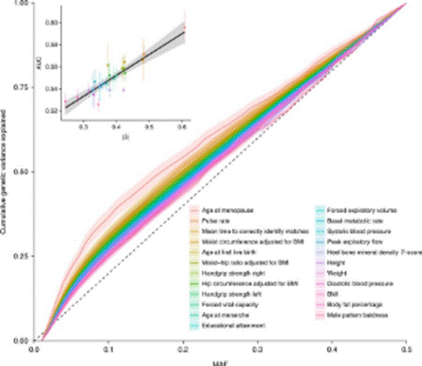
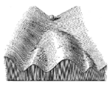
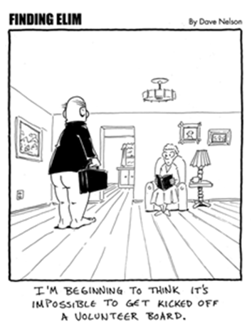
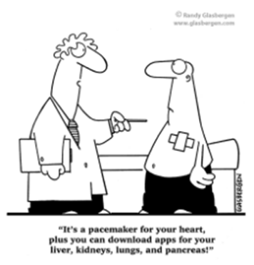
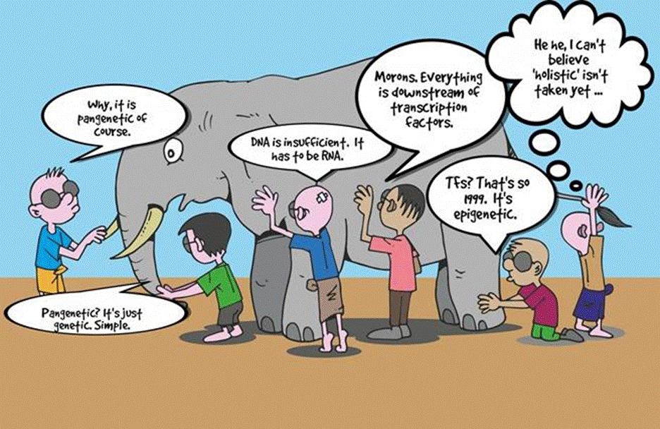
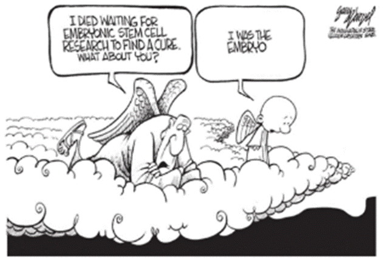
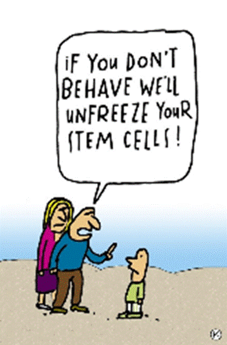
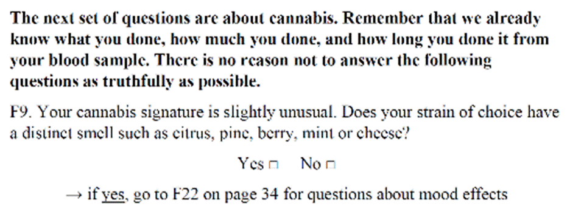

IEU (Epi)Genetics Journal Club
�Only 30 minutes
and you don't have to have read the paper, so please try to make it along!�
We meet every Tuesday at 10:30am for 30 minutes in Barley House room BG7.� Each week a volunteer presents a recently published epigenetics paper of their choice. For more information or to volunteer to present, send a note to one of the organizers:
Gemma Sharp (gemma.sharp@bristol.ac.uk)
Matthew Suderman (matthew.suderman@bristol.ac.uk)
Rota:
March 26, 2019
Presenter:�
Matthew Suderman and
Nancy McBride
Tomorrow morning (BG7, 10:30am), we visit the salad bar
again (see previous announcement below).�
As you can readily verify, Nancy and I have sourced only the freshest ingredients
from the most reliable suppliers.
Longitudinal analyses
●
Longitudinal DNAm changes and associations with
treatment in Parkinsons disease
●
Chemotherapy changes
DNAm in blood.
EWAS
●
Fetal alcohol
syndrome associated with DNAm of blood collected in childhood
(after age 5)
●
Opiod dependence
associated with DNAm in blood.
●
Allergic
sensitisation associated with DNAm in blood in childhood.
●
Shift work
associated with DNAm and epigenetic age in blood.
●
Maternal age with
DNAm in blood collected in adulthood.
●
Orofacial cleft
associated with DNAm from blood spots collected at birth (includes VTRNA2-1
gene)
●
Kidney function in
HIV
associated with DNAm in blood.
EWAS
comparisons
●
Prenatal and own smoking DNAm associations in blood
enriched in lung tumour DNAm differences.
●
Associations of colorectal cancer and of obesity similar in the DNAm of blood.
Epigenetic
age
●
An even larger GWAS of epigenetic
age acceleration (n= 13,493) identifies a few novel genetic
associations.
Epigenetic
variation
●
'Epivariations' in blood DNAm linked to autism and
schizophrenia (these are like rare variants)
Cross-tissue
comparisons
●
CpG site correlations between placenta and cord
blood DNAm.
Mechanism
●
Fumaric acid esters are highly effective
immunomodulators in patients with multiple sclerosis. This
effect appears to be due to DNA methylation changes in brain-homing
CCR6+ CD4 and CD8 T cells.
●
Vitamin intake and genetic variation
within DNMT3L interact to influence cognitive
decline.
●
Letter to the editor discusses our
study of persistence of prenatal smoking DNAm effects in
connection with a link between DRD1
and lung cancer .
Methods
●
Bigmelon is a
tool for normalizing and analysing large DNAm datasets
.
March 19, 2019
Presenter:�
Charlie Hatcher
This
week at (epi)genetics journal
club,
Charlie Hatcher will be discussing the recent outputs of the #Visscher group
Signatures of
negative selection in the genetic architecture of human complex traits
https://www.nature.com/articles/s41588-018-0101-4
They
introduce BayesS, a method to infer the action of natural selection on the
genetic variants underlying a complex trait. Join us in BG7 at 10:30 tomorrow where we will be continuing our in-depth and
Vissch-ous discussion about whether the plot below is a GREAT
or TERRIBLE example of #datavis.

We
will be having one vote on this, apart from Tom and I, who will get 3
#PeoplesVote.
March 12, 2019
Presenter:�
Matthew Suderman
Tomorrow morning (10:30am, BG7) is all about variety. We
will depart from our normal procedure of discussing a recent publication and
instead discuss a number of recent findings reported
in the epigenetics
literature.� Delectable specifics are
still being determined based on the following list, sometimes so much choice is
agonising �
Methods
●
Recommendations for handling cellular heterogeneity
in buccal DNAm.
●
How to use public resources for causal inference in
Epigenetic Epidemiology of Neurodevelopment and Mental Health (by Esther,
Caroline and Doretta).
●
Long-read nanopore sequencing
identifies new imprinted regions in mouse.
Candidate gene studies
●
BDNF
associated with combat and exercise in veterans.
EWAS
●
Air pollution in cord
and placenta.
●
Air pollution in adult
peripheral blood.
●
Alcohol use
disorder associated with CpG sites associated with brain insular
surface area.
●
Orofacial clefts and
newborn blood.
Fail to replicate findings based on ALSPAC and the Cleft Collective.
●
Preterm birth and
maternal blood.
Includes whole genome sequencing and RNA-seq.
●
Periodontitis in
blood, buccal and adipose tissue (Twins UK).
●
Childhood lung
function and risks of asthma and COPD in cord blood (meta-analysis of 5
cohorts).�
The approach used is prone to false positives.
●
BMI and adolescent
peripheral blood leukocytes.
No tests survive adjustment for multiple tests, but functions of top genes
'make sense'.
●
Socio-economic
position in young adult blood.
2546 associations! Study performed in a non-affluent Philippine population.
●
Paternal
pre-pregnancy obesity and offspring cord blood.
Observed sex-specific associations.�
However, strongest association TAPBP was not replicated.
●
Insulin resistance and
peripheral blood.
798 CpG site associations observed!
●
Hepatic fat and
peripheral blood.
Observe 22 CpG site associations in 3,400 European, 401 Hispanic and 724
African ancestry participants.
●
Folic acid
supplementation during pregnancy (RCT) linked to differentially
methylated regulator of ZPF57 in cord blood.
DNAm scores
●
BMI score
associated with health and disease in LBC.
DNAm age
●
Developmental stage
at least partially independent of DNAm age in mammalian neural
retina.�
●
Y-chromosome derived DNAm age is different from
autosomally-derived DNAm age.
DNAm levels tend to increase with age, accelerate in the oldest individuals and
associate negatively with mortality.
Longitudinal DNAm
●
Generalized
estimating equestion (GEE) models used to investigate smoking and DNAm at
two time points.
Smokers tended to have greater DNAm change which was almost always linked to
reduced DNAm levels.
March 5, 2019
Presenter:�
Matthew Suderman
With genetic testing of "healthy" individuals becoming a
potential new tool for clinicians and direct-to-consumer genetic testing
already readily available, the interpretation of the effects of all genetic
variants is becoming extremely important. Rare disease studies often suffer
from the fact they ascertain "unhealthy" individuals, which may bias
results away from the null, whereas population cohorts often suffer from the
opposite effects. There has generally been a disconnect between genetics
studies within each domain, but as population cohort sample sizes with genetic
data continue to rise, this may begin to rapidly change... Tomorrow we'll be discussing a paper that re-assessed rare variants
discovered in a clinical/rare disease study setting within UK biobank. Join us
tomorrow in BG7 at 10:30.
�
Paper:
February 27, 2019
Presenter:�
Sarah Watkins
The skeletons you've
been hiding in your closets are about to be revealed. Garg et al. (2018) have
recently identified a set of correlated but highly variably methylated regions
spread throughout the genome. �The
variation appears to be environmentally induced with little influence from
genotype.� By experiment the authors
uncovered many naughty secrets about the environments frequented by a group of
genetically similar fibroblasts.� Join us
tomorrow when Sarah Watkins will reveal further salacious details (10:30am in
BG7):
Garg, P., Joshi, R. S., Watson, C., &
Sharp, A. J. (2018). A survey of inter-individual variation in DNA methylation
identifies environmentally responsive co-regulated networks of epigenetic
variation in the human genome. PLoS genetics, 14(10), e1007707.
February 19, 2019
Presenter:
�Ashley Budu-Aggrey
PheWAS give the opportunity for researchers to assess the association
between genetic variants and a large number of
phenotypes. Combining this with polygenic risk scores could provide a powerful
method to evaluate how the genetic basis of a disease relates to other traits.
Tomorrow, Ashley will lead the discussion on an application of this in a cancer
setting and the implications of the findings. Join us in BG7 at 10:30.
�
Paper:
�
February 12, 2019
Presenter:�
Matthew Suderman
Tomorrow morning (10:30am, BG7) we'll compare dying vs ageing.
To get us into the mood, we'll do a
little test aimed at differentiating between normal ageing and dementia
(adapted from here):
- Memory: Do you temporarily forget names
or do you forget familiar names?
- Orientation: Do you forget why you entered a room
or do you forget how to get home?
- Mental tasks: Do you make mistakes following a recipe or are you
unable to follow a recipe?
- Daily tasks: Do you sometimes need help with the TV remote or
are you unable to use the remote?
- Speaking: Do you sometimes struggle to find the right word or do you have trouble forming logical sentences?
- Judgement: Do you sometimes make questionable purchases or do you often give money away excessively?
- Mood: Are you irritable when routines are changed or are
you becoming increasingly withdrawn and suspicious?
I don't know
about you, but I can often answer yes to both cases for all 7 questions!� ... well except the checkbook.� If you still use one of those and you balance it, then you're probably mentally sharper than those half your age
who don't.
Tomorrow we'll
see what DNA methylation has to say about the differences between ageing and
mortality:
Lund JB,
Li S, Baumbach J, Svane AM, Hjelmborg J, Christiansen L, Christensen K, Redmond
P, Marioni RE, Deary IJ, Tan Q. DNA
methylome profiling of all-cause mortality in comparison with age-associated
methylation patterns. Clin Epigenetics. 2019
Feb 8;11(1):23.
There's been a lot of epigenetics work published in the last few
weeks:
●
DNA methylation age
○
A new DNA methylation
clock, GrimAge, improves
prediction of lifespan and 'healthspan'.
○
A longitudinal study in
twins suggests that DNA methylation age may be influenced by environment
in old age.
●
Assisted reproductive technologies
○
Imprinting disorders linked
to assisted reproductive technologies likely take place just after fertilization.
●
Pregnancy
○
Maternal
obesity in pregnancy is linked to gene
expression and DNA methylation changes in the adiponectin and leptin systems of
the human placenta.
●
Circadian rhythm
○
A fairly
comprehensive review of circadian
rhythms and gene regulation.
○
DNA methylation is
associated with insufficient sleep.
●
Fundamentals of DNA
methylation
○
Hypomagnetic
fields reduce the ability of cells to
differentiate and disregulate DNMT3b reducing DNA methylation levels.
○
Increased
promoter CpG density enhances gene activity independently of DNA methylation.
○
Specific CpG sites
('traffic lights') are better predictors
of gene activity than overall promoter
methylation.
○
The best
peripheral surrogate for brain (saliva,
buccal or blood) really depends on the genomic region of interest.
●
Prediction
○
Bladder
cancer can be predicted by measuring the DNA
methylation of two genes in urine.
Feb 5, 2019
Presenter: Matt Lee
Of course we all know the plethora
of harmful phenotypes obesity is linked to, but a growing body of research
suggests there are groups of people with a higher adiposity, that don't have
increased risks of certain diseases or the metabolic profile many other obese
individuals do. This is termed "favourable adiposity". There have now
been alleles found to associate with a higher adiposity, but lower risk of type
2 diabetes! How can this be so?? - Matt Lee will be explaining this and much
more to us tomorrow at 10:30 in BG7. Hope to see you there!�
�
Paper:
Jan 29, 2019
Presenter: Matthew Suderman
If you love oranges, then you gotta love
DNA methylation--without it, oranges don't ripen.
But that's not
what we'll be talking about tomorrow at 10:30am in BG7.� Instead, we'll
instead discuss a recently published argument that oranges, oops I mean SOCS3,
is a possible drug target for oranges, sorry again I meant obesity (I'm going
to go eat an orange):
Guo Q, Zheng R, Huang J, He M, Wang Y,
Guo Z, Sun L, Chen P.� Using Integrative
Analysis of DNA Methylation and Gene Expression Data in Multiple Tissue Types
to Prioritize Candidate Genes for Drug Development in Obesity. Front
Genet. 2018 Dec 19;9:663.
... as well as other
recent news in epigenetics:
●
Guide Positioning Sequencing is better than Whole Genome Bisulfite Sequencing.
●
Education attainment is associated with DNA methylation at 11 CpG sites independently of
smoking status.
●
Oxytocin receptor methylation appears to modulate oxytocin effects on human
brain activity during social interaction.
●
Horvath's PhenoAge
does not capture the effects of substance use on mortality.
●
●
Brain-region specific DNA methylation and chromatin
accessibility are enriched with loci associated with neuropsychiatric traits (analysis based on
WGBS, RNA-seq and ATAC-seq profiles from 12 individuals).
●
Myocardial infarction appears to induce DNA
methylation changes at 9 CpG sites in blood.
Jan 22, 2019
Presenter:�
Simon Haworth
At ASHG 2018 one of the main focuses was on diversifying the
populations we use in genetics studies. There are many benefits to this, but
some analytical hurdles must be overcome. In the journal clubtomorrow,
Simon Haworth will describe a new method that looks to estimate heritability in
admixed populations by adapting LD score regression.�
�
Paper:
Jan 15, 2019
Presenter:�
Matthew Suderman
What am I? Am I at any
moment simply a point in Waddington's epigenetic landscape differentiating downhill toward the drop-off?

And if I somehow manage
to fight the slope and move back uphill to a previous location, have I achieved
anything of merit or am I exactly as I was at the earlier time?�
And if I manage to reach
a location previously occupied by someone else, do I take their identity?� This is the question of The Epigenetic Cloning Agency
led by Jonathon Keats. Keats
proposes environmental exposures in the form of carefully designed tinctures
for reaching locations on Waddington's landscape occupied by famous
people.� His Jesus Christ tincture, for
example, includes omega-3 fatty acids ("he likely at a lot of fish"),
iron ("nails were involved") and a generous dose of placebo ("the
amount of faith ... was vast").
Tomorrow morning (BG7,
10:30am), Nancy McBride will help us consider this further, at the level of
single cells. She will review what we are learning about how cells travel on
the epigenetic landscape via the many "epilayers" of gene
regulation.� She will describe divergence
between epigenetic and transcriptomic cell states, temporal trajectories of
regulation, and regulatory diversity.� By
the time she is done, you may even begin to question the meaning of 'cell type'.�
Shema
E, Bernstein BE, Buenrostro JD. �Single-cell and
single-molecule epigenomics to uncover genome regulation at unprecedented
resolution. Nat Genet. 2019
Jan;51(1):19-25.
Jan 8, 2019
Presenter:�
Laura Corbin
Very happy new year! For the first (epi)genetics journal club of
2019 Laura Corbin will be walking us through what may be wrong with using the
model implemented in GCTA to estimate SNP heritability and provide us with
another method.
�
Paper:
Speed et al. Reevaluation of SNP heritability in complex human
traits. Nat Gen 2017
�
See you there at the normal time of 10:30 in BG7.
For those interested:
The debate of the correct method to estimate SNP
heritability has been going on for a few years now, see: Improved
heritability estimation from genome-wide SNPs and the responses to it.
They also debate the best method to estimate it from summary statistics: SumHer better estimates the SNP heritability of complex traits
from summary statistics.
(slides)
Dec 18, 2018
Presenter: Sam
Neaves
Tomorrow morning (BG7, 10:30am) Sam
Neaves will tell us about his PhD work on subgroup discovery in biological data
using ... Prolog!�
Prolog is a declarative computer language which means that a Prolog
script is simply a set of facts and rules.�
This is different from language like R where the script explicitly tells
the computer exactly how to complete a task.�
... One of the most satisfying moments of
my time in Computer Science was creating my own logic programming language similar to Prolog and using it to solve logic puzzles ...
sigh ... oops, sorry, got a bit distracted there!
Sam will discuss how to use this approach
to perform enrichment analyses and bumphunting in DNA methylation data and to
finding subgroups of microbes in a microbiome dataset.
A copy of his thesis chapter is
available in case you'd like to take a peak.
Dec 11, 2018
Presenter: Ruth Mitchell
Tis the season to be jolly and tis the season of common
cold and flu infections! To help deal with this at (epi)genetics journal club
this week we're going to be learning a lot more about
our defence mechanisms against infection. Ruth Mitchell will be explaining how
variation amongst innate and adaptive immune cell parameters may be brought
about by environmental and genetic factors.
�
Paper:
Dec 4, 2018
Unfortunately we'll need to cancel the
journal club meeting tomorrow. We will resume next week Tuesday.
�
In the meantime, we're looking for volunteers to present in the new
year.� It's very
easy to volunteer, just add your name next to a date in the spreadsheet below
(which also contains a tab listing recommended papers, however you are
certainly welcome to select something else):
https://docs.google.com/spreadsheets/d/14KhHDgbFl8uGqqoRqaAwf6eHvvYliKQsQB_y54vI48k/edit?usp=sharing
�

Nov 27, 2018
Presenter: Riccardo Marioni
Tomorrow
morning (10:30am in BG7), Riccardo Marioni will be presenting a couple of his
excellent recent papers.� See below.
Minutes ago he stated in front of 60 witnesses that
"all I can think of is death and sex, can anyone think of anything
else?".� Clearly his presentation is
sure to be exciting.
(disclaimer:
I provide no context for his statement so cannot be accused of taking his words
out of context)
Olova N, Simpson DJ,
Marioni RE, Chandra T. �Partial reprogramming induces a steady decline
in epigenetic age before
loss of somatic identity. Aging Cell. 2018 Nov 18:e12877.
Daniel Trejo Banos, Daniel
L McCartney, Tom Battram, Gibran Hemani, Rosie M Walker, Stewart W Morris, Qian
Zhang, David J Porteous, Allan F. McRae, Naomi R Wray, Peter M Visscher, Chris
S Haley, Kathryn L Evans, Ian J Deary, Andrew M McIntosh, Riccardo E Marioni,
Matthew R Robinson. Bayesian reassessment of the epigenetic architecture of complex traits
bioRxiv 450288; doi:
https://doi.org/10.1101/450288
Nov 20, 2018
Presenter: Matthew
Suderman
We finally have it, genome-wide DNA
methylation profiles of a single individual over several months.� Personalized medicine, here we come!�
Tomorrow morning (10:30am in BG7), I will
present the analysis of 28 whole-genome DNA methylation and 57 gene expression
profiles from blood collected from the same person across 36 months:
Chen R, Xia L, Tu K, Duan M, Kukurba K,
Li-Pook-Than J, Xie D, Snyder M. Longitudinal
personal DNA methylome dynamics in a human with a chronic condition. Nat
Med. 2018 Nov 5.
To get you in the mood, below are some thoughts about the
great hopes we have for technology and omics integration into medicine:


Incidentally, graphics on the Institute for Systems Biology website
suggests they may be mining the minds of infants for the secrets of
personalised medicine:
And, finally, in other actual epigenetics
news:
● A systematic mouse study suggests that non-genetic inheritance linked to the Avy allele in Agouti mice is likely an exception than a general� mechanism for non-genetic inheritance.
●
● DNA methylation biomarkers of lung cancer in blood have been discovered in the Norwegian Women and Cancer cohort study.
● Single-cell chromatin profiling shows increased variation with age, both between individuals as well as between cells within the same individual.
● Nearly all disease-associated DNA repeats co-localise with chromatin domain boundaries (Fragile X is a disease example).
● There is a new epigenetic clock for mice that better estimates age across the entire mouse lifespan.
● DNA methylation at ANK1 is associated with Alzheimer's, Huntington's and Parkinson's disease in the brain but in a region- and disease-specific manner.
(slides)
Nov 13, 2018
Presenter: James Staley
This week at (epi)genetics journal club
James Staley will be presenting the paper below that uses a new framework to
identify interactions using UK biobank as well as introducing a new exciting plot - the "Manhattan Sunset"!
�
Paper:
Nov 6, 2018
Presenter: Lea Perret
Tomorrow morning (BG7, 10:30am), Lea Perret will give us a tour
through 3 publications on peer victimization:
�
- Geoffroy, M. C., Boivin,
M., Arseneault, L., Turecki, G., Vitaro, F., Brendgen, M., ... & C�t�,
S. M. (2016). Associations between peer victimization and suicidal
ideation and suicide attempt during adolescence: results from a
prospective population-based birth cohort. Journal of the American
Academy of Child & Adolescent Psychiatry, 55(2), 99-105.
- Geoffroy, M. C., Boivin,
M., Arseneault, L., Renaud, J., Perret, L. C., Turecki, G., ... &
Tremblay, R. E. (2018). Childhood trajectories of peer victimization and
prediction of mental health outcomes in midadolescence: a longitudinal
population-based study. Canadian
Medical Association Journal, 190(2), E37-E43.
- Perret, LC, Orri, M,
Boivin, M, Ouellet-Morin, I, C�t�, SM, Tremblay, R, Renaud, J, Turecki, G,
Geoffroy, MC. Concurrent and longitudinal associations of cyber versus
face-to-face victimization to suicidal ideation and attempt during
adolescence. Submitted to Lancet
Psychiatry.
�
Lea Perret is a PhD student in Mental Health Research at the Department of Psychiatry at McGill University in Montreal QC where she is
being supervised by Dr Geoffroy and Dr Turecki. She completed a masters in
neuroscience on animal models of depression in early-life and is now studying
the effects of peer victimization in childhood and adolescence on suicidality
and depression. While in Bristol, she will be investigating associations of
bullying, suicidal ideation and depressive ideas in
DNA methylation in the 1958 British Birth Cohort.
�
Lea will be visiting the IEU until Nov 16 and making the BS10
office even more fabulous.�
�
Oct 30, 2018
Presenter: Chris Zheng
This weeks (epi)genetic journal club will be at the slightly later time of 2pm,
to accommodate the jet lag of our ASHG gang!*
Chris Zheng
will be presenting Emilsson V et al. Co-regulatory networks of human serum
proteins link genetics to disease �
�
Please join
us in BG7 to pile through Tom
Battram's stash of peanut butter M&Ms and other delectable American
snacks**
Oct 23, 2018
Presenter: Matthew Suderman
Is consortia work getting
you down? Does the word 'consortium' bring to mind passive-aggressive email
exchanges, scripts that worked fine until someone else used them, watered-down
manuscripts that even you wouldn't read,� international summits to negotiate
authorship,� or fantasies about swapping
co-authors for reviewer number 3? Well Mario Bauer has your back.� In a recent review, he suggests leaving
consortia work to our more diplomatic genetics colleagues and doing something
quite different in epigenetics.� Join us
tomorrow (10:30am, BG7) to discuss his proposal:
Bauer M. Cell-type-specific disturbance of DNA methylation
pattern: a chance to get more benefit from and to minimize cohorts for
epigenome-wide association studies.
Int J Epidemiol. 2018 Mar 1.
In other
epigenetics news:
● Childhood abuse is associated with human sperm DNA methylation.
● Caenorhabditis elegans sperm carry epigenetic memory of both spermatogenesis and oogenesis.
● DNA sequence appears to determine whether a DNA molecule prefers to loop or condense, but this can be modified by the addition of DNA methylation.
(slides)
Oct 16, 2018
Cancelled because of ASHG.
Oct 9, 2018
Presenter: Doretta Caramaschi
If you passed by BG7 a
couple of weeks ago, you may have heard some potentially disturbing maniacal laughter.� It's what
researchers tend to do when they ponder the possibilities of CRISPR.�
Doretta's presentation about how it was used to edit DNA methylation to
reverse Fragile X Syndrome generated so much discussion that we decided
to continue this week (tomorrow, 10:30am in BG7).
Liu
et al. Rescue of Fragile X Syndrome
Neurons by DNA Methylation Editing of the FMR1 Gene. Cell. 2018 Feb 22;172(5):979-992.e6.
�
Recent news in
epigentics:
● �EWAS in tissues other than blood
○ Acute sleep loss results in tissue-specific changes in DNA methylation (adipose and skeletal muscle).
○ Childhood abuse is associated with DNA methylation changes in sperm.
○ ELOVL5 investigated as an 'epigenetic' biomarker of type 2 diabetes in MZ twin blood and other tissues as well as in mice.
● EWAS of environmental exposure
○ Air pollution in 4 European countries is associated with DNA methylation.
○ Pesticide exposure in an agriculturally intense region in California is associated with DNA methylation.
● Investigating DNA methylation
○ A genome-wide survey of DNA methylation inter-individual variation has been published.
○ Reanalysis of a dataset finds that promoter DNA methylation usually represses gene expression, contradicting previous findings.
● Epigenetic clocks
○ Epigenetic clocks have not worked well in skin until now.
● Reviews
○ A review discusses the hypotheses smuggled into 'hypothesis-free' EWAS.
○ A literature review suggests that we should focus on studying the right cell type rather than increasing sample size.
Oct 2, 2018
Presenter: Alice Carter
Back to genetics this
week and we have Alice Carter talking to us about using polygenic risk scores
for prediction of five common diseases and the possible utility of polygenic
scores for identifying those at high risk of common diseases in the clinic:
�
Please join us in BG7 at 10:30 tomorrow to find out more!�
Sept 25, 2018
Presenter: Doretta Caramaschi
Imagine that you're supervising a PhD student, and they just don't see
things your way.� You've
tried every reasonable solution, so you decide to try the spray your mate in epigenetics gave you after last
week's faculty whinge.� Next supervisory
meeting, you spray a small amount on their keyboard when they're
not looking and a few days later they're good as gold.�
Sound too good to be
true? Join us tomorrow (10:30am in BG7) to hear Doretta Caramaschi explain how
to use DNA methylation editing tools to reverse Fragile X Syndrome� in neurons.� She might even be induced to disclose how we
might deliver treatments like this by aerosol spray.
�
Liu
et al. Rescue of Fragile X Syndrome
Neurons by DNA Methylation Editing of the FMR1 Gene. Cell. 2018 Feb 22;172(5):979-992.e6.
�
Recent news in
epigentics:
�
● An EWAS of 1132 individuals of all 28 million CpG sites uncovered associations with major depressive disorder!
● Early life but not adult socio-economic position is associated with epigenetic age.
● There is a histone methylation signature of inflammation in Crohn's disease.
Sept 18, 2018
Presenter: Denis Baird
The
suspense is over! Today, Denis Baird will be presenting:
"Integrative
analysis of omics summary data reveals putative mechanisms underlying complex
traits" from Yang Wu and colleagues (2018)
See
you in BG7 at 10:30!
Sept 11, 2018
Presenter: Esther Walton
Headline A large meta-analysis of DNA methylation implicates axon guidance in depression
Hear Esther Walton tell
all about it tomorrow at 10:30am in BG7:
Story
Jovanova et al.� DNA Methylation Signatures of Depressive Symptoms in
Middle-aged and Elderly Persons: Meta-analysis of Multiethnic Epigenome-wide
Studies. JAMA Psychiatry. 2018
Sep 1;75(9):949-959.
Axon guidance is the mysterious process by which neurons
grow axons to connect with other neurons.�
We know that the tip of the axon has a growth cone that
"sniffs" around for molecular signals that either attract or repel.
This much makes sense but we know little about why or how axon growth is so
precise.� You can actually
watch it happen on youtube (the
comment section contains a cautionary tale about public engagement).
Other news in epigenetics:
●
Whole-genome bisulfite sequencing is getting a lot cheaper.
●
There
is a need for more sensitive ways to verify ages of refugees.
● Age associations in DNA methylation and hydroxymethylation are largely distinct in mouse blood.
● Cancer and aging induce similar DNA methylation changes in multiple tissues.
● DNA methylation associated with frailty index in elderly twins.
● DNA methylation associations with food allergy in CD4+T cells possibly due to gene-environment interactions.
● There is greater DNA methylation variability in rheumatoid arthritis-discordant MZ twins.
● Gestational diabetes mellitus is associated with DNA methylation in offspring during childhood (DNBC study).
● Pollution is associated with placental DNA methylation (EDEN study).
● Cold exposure induces changes in sperm DNA methylation and enhances capacity to form mature active brown adipocytes.
● A small study of 5-hydroxymethylation observes differences in brains of autism spectrum disorder.
● EWAS of IQ identifies association linked to DRD2 (IMAGEN study).
August 7, 2018
Presenter: Kim Burrows
SCENE:
14:02 pm, last Monday, the 30th July 2018. Our
leading man Paul Yousefi* had started the week on a high, having read the
brilliant response from some of the IEU's own to a clickbaiting disaster by Dr Eva Osmond. His mood quickly turns as he
begins his daily scroll through Vogue online, finding himself incensed at the
latest travesty in the market of epigenetics miracle cures. Face creams had never worked
for him! His musings are interrupted by the dulcet tone of Outlook, signalling
the arrival of a new email.
�
PY: Ooooh, journal
club! My favourite extra-curricular
activity! I wonder what�s in store this week?
�
His heart starts to sink as he reads the title
of the proposed article: "The Importance of DNA Methylation of Exons on Alternative
Splicing". Why can�t he understand what those
words mean!? Imposter Syndrome can only explain so much.
�
PY: EXONS?! ALTERNATIVE
SPLICING?! This is worse than trying to make sense of one of Matthew Lee's
emails!
�
Matthew Suderman suddenly appears in a double
helix-tornado of smoke. He looks longingly at Trump Towers (the weights machine
in their office), before deciding it's not worth
asking how much use it's seen in his absence. After all, fragile masculinity
can only take up so much of everyone's day.
�
MS: Do not worry Paul
Yousefi. I have foreseen, from Naples, that
due to technical issues journal club is going to be pushed back a week. Kim Burrows
will in fact be explaining all on Tuesday
7th August at 10:30am in BG7. You know, Nancy's email was littered with questionable
content. Frankly, I can't believe Tom B gave her this
responsibility in the first place.��
�
PY: Oh
thank goodness! That extra week will give me plenty of time to read the paper
before journal
club
so there really is no excuse to not turn up with insightful queries and/or
comments. Exon out homey!
�
MS: Vitello solleva!
�
*****************************************************************************
* our hero and saviour, the guardian of Musical Randomisation, the IEU Spotify playlist
(please join and contribute).
**still not indicative of real
events. Matthew Suderman has not commanded the
ability to apparate, from Naples or anywhere else.� Matthew Lee, your emails are a treat; capital
letters are
overrated. Paul
Yousefi, forgive us.
***keep looking out for our upcoming
screenplay "Academi-Uh?!"� 2018 German & Saunders Inc.
****George, please fund this.
July 31, 2018
SCENE:
Post-heatwave Monday morning, everyone
has the slightly fresher look of people who slept in actual duvets - not just
the sheet. Our two protagonists are hatching a plan.
Tom B: Nancy, will you
write this weeks epi(genetic) journal club
email?
Nancy: Of course, Tom! As
a PGR, I will do anything I can to enhance my profile in the IEU!
Tom B: Thanks Nancy, you
are a credit not only to yourself, but to your supervisors and society as a
whole *sends paper entitled "The Importance of DNA
Methylation of Exons on Alternative Splicing" by Ronna Shayevitch, Dan
Askayo, Ifat Keydar and Gil Ast*
Nancy: Oh man, I'm going
to struggle to link this paper's topic to the witty repertoire I had planned -
discussing the Mitchell-Escher twitter debate regarding transgenerational epigenetic
changes! Or to my original take on the so-called dystopian nightmare that is
the 23&Me/GSK collaboration! Also...what do those words
mean?
Tom B: That's what everyone can find out tomorrow @ 10:30 am in BG7, when Kimberley Burrows will reveal all!
�
Nancy: But what about the
devastating news we have to share, who will break it
to everyone?!
Tom B: I thought this
much was obvious.
Nancy: JOURNAL CLUB IS CANCELLED FOR THE MONTH OF AUGUST BECAUSE MATTHEW
SUDERMAN HAS TAKEN HIS CALF RAISES TO NAPLES
See you in September folks!
#spliceosome
***this is not an actual
interaction and was curated purely for entertainment purposes. Tom, please don't sue me.
****this paper is
paywalled hence a handy .zip file is attached.
*****please keep a
lookout for my upcoming screenplay, "Academi-Uh?!"� 2018
July 24, 2018
Presenter: Lavinia Paternoster
Our genes
are complex and have a wide variety of functions. These functions have been
attributed to
everything from our eating habits toour criminal activities. Although these claims may be (at least in part)
justified, we must do more to uncover the genes truly driving the discrepancies in human
behaviour and disease. This week Lavinia Paternoster will present a paper that integrates
3 methods to
try and identifycausal genes related to chronic obstructive pulmonary disease
(COPD).
So join us tomorrow at 10:30 in BG7 to find
out more:
�
Lamontagne
M. et al. Leveraging lung tissue transcriptome to uncover candidate causal genes in COPD genetic associations
July 17, 2018
Presenter: Paul Yousefi
This week
our topic is placental meteorology. Naturally our
presenter will be Paul Yousefi, widely known to have survived several months attached to a placenta under a
variety of meteorological conditions.�
Tomorrow morning (BG7, 10:30am), he will tell us all about this
experience as well as what recent scientific discoveries suggest about the
epigenetic state of his placenta after he was finished with it.
Abraham
E, Rousseaux S, Agier L, Giorgis-Allemand L, Tost J, Galineau J, Hulin A,
Siroux V, Vaiman D, Charles MA, Heude B, Forhan A, Schwartz J, Chuffart F,
Bourova-Flin E, Khochbin S, Slama R, Lepeule J; EDEN mother-child cohort study
group.� Pregnancy exposure to atmospheric pollution and
meteorological conditions and placental DNA methylation. Environ Int. 2018 Sep;118:334-347.
�
�You may also be interested in:
● Epigenetic-based omnigenic model of psychiatric disorders discussed.
● Stool DNA methylation harbors a biomarker of colorectal cancer.
● Sperm epigenome modified and obesity risk reduced following paternal cold exposure. Go Canada!
● Large EWAS of depressive symptoms published by CHARGE.
● DNA methylation regulates alternative splicing.
● Substantial immune cell contamination in saliva, buccal and cervix samples revealed by DNA methylation-based cell count estimates.
● Prenatal phthalate exposure induces DNA methylation changes in imprinted genes.
● New imprinted genes discovered using the Illumina Infinium MethylationEPIC BeadChip.
(slides)
June 26 - July 10, 2018
No journal club.
June 19, 2018
Presenter: Matthew Suderman
Blood is being vindicated. It's been called
'peripheral', 'off-target but convenient',� 'what we have', 'disgusting',
etc.� However, it was recently shown that
during 3 million years of our
evolution, blood flow rates to the brain increased 6-fold while brain size
increased only 3.5 times.� To which blood responded: "Take that
brain, still think you're the shining pinnacle of human evolution? You'd be
little more than an colourless vegetable without
me."
And tomorrow morning it
continues (10:30am, BG7). We'll discuss evidence that
our large genomic datasets derived from blood tell us more about brains and
traits than our much smaller genomic datasets derived from the brain itself.
Qi
T, Wu Y, Zeng J, Zhang F, Xue A, Jiang L, Zhu Z, Kemper K, Yengo L, Zheng Z;
eQTLGen Consortium, Marioni RE, Montgomery GW, Deary IJ, Wray NR, Visscher PM,
McRae AF, Yang J. Identifying gene targets for
brain-related traits using transcriptomic and methylomic data from blood. Nat Commun. 2018 Jun 11;9(1):2282.
(slides)
June 12, 2018
Presenter: Carolina Borges
According to one report
global warming may lead to parts of Europe turning into deserts very soon! To help prepare you for this
change I thought I would share a few facts you might not know about our
favourite desert crossing animals, camels:�
● They can run up to 40mph (67kph)
● They are known for spitting on people when
they feel threatened � this spit also contains some of the contents of their stomach
● A camel noise was used to help voice Chewbacca
in Star Wars
● Their popularity within the genetics community
has led to a new method being named after them (CaMMEL)
�
For more camel facts
visit here. For more information on how to identify
genes that are mediating the effect of SNPs from GWAS summary statistics using
CaMMEL then come to BG7 at 10:30 tomorrow where Carolina Borges will present:
Park et al. A Bayesian approach to mediation
analysis predicts 206 causal target genes in Alzheimer's disease. biorxiv
�
June 5, 2018
Presenter: Tom Battram
Tomorrow's meeting is all
about bodily fluids and DNA methylation. In most genomics publications, we're usually pretty happy with analysis of one fluid, but
this time we have three: saliva, urine and plasma.� If it sounds like the authors have found some
generous donors, consider this:
● An average male body has 17 litres of water outside of cells and a female body 11.5 litres.
●
● The human body produces over 30 different fluids, many of them easily collected (some with a mop and bucket!).
Clearly the use of bodily
fluids in genomics , as in art, has
only just begun.� If you're short on
cash, you could even sell some of your own (including this) but not on eBay.
Tomorrow morning (10:30am
in BG7), Tom Battram will present the following:
Zaghlool et al. Deep molecular
phenotypes link complex disorders and physiological insult to CpG methylation. Hum Mol
Genet. 2018 Mar 15;27(6):1106-1121.
May 29, 2018
Presenter: Tom Richardson
The
heritability heavyweights have been throwing punches back and forth like Ali
and Frazier, see https://twitter.com/djbalding/status/975862076928241664. But this has given the rest of us the tools
to uncover the genetic architecture of many traits. Now heritability analyses
may also be able to identify disease relevant tissues. Giving a knockout
explanation of this new method will be Tom Richardson in the ring that is BG7, tomorrow
at 10:30:
Finucane�
et al. Heritability enrichment of specifically expressed genes
identifies disease-relevant tissues and cell types. Nat Genet. 2018 Apr;50(4):621-629.
(slides)
May 22, 2018
Presenter: Ryan Arathimos
If you haven't yet been
introduced, it is time you met Tumor Necrosis Factor α, known on the street as Alpha Gene Tumor
Killer and affectionately as TNF-α to friends.� Meet the ruler of the cellular world.� It's job title
Proinflammatory Cytokine represents only the tip of its generific iceberg. It's nucleotides are positively pleiotropic: pathogen
defence, tissue repair, tissue regeneration, organ development, appetite
regulation, and many more.� It plays key
roles in all sorts of diseases including atherosclerosis, type 2 diabetes, many
cancers, multiple sclerosis, Alzheimer's disease, major depression, psoriasis,
and inflammatory bowel disease.
Importantly, TNF-α
has a longer Wikipedia page (nearly
30 characters) than over 97% of UoB Academics with this distinction (including
two IEU leads).� Only six have longer
pages, the longest belonging to David Nutt. In the spirit of reproducible
science, the R script for this ground-breaking analysis is reproduced below.
�
And finally, TNF-α
has effects on DNA methylation that are relevant to Coronary Heart Disease.
Ryan Arathimos will tell us more about this tomorrow morning (10:30am in BG7):
�
Aslibekyan
et al.� Association of Methylation Signals With Incident
Coronary Heart Disease in an Epigenome-Wide Assessment of Circulating Tumor Necrosis
Factor α. JAMA
Cardiol. 2018 Apr 4.
May 15, 2018
Presenter: Dan Lawson
Archaeologists
believe that people have been eating popcorn for thousands of years, but there
have been more uses for it than just food, for example Christmas tree decorations. Tomorrow in BG7 at 10:30
Daniel Lawson will present an entirely new way to use Popcorn (may or may not
just be the name of a Python package) to estimate transethnic genetic-correlation:
�
Brown BC et al. Transethnic
Genetic-Correlation Estimates from Summary Statistics
�
We're back with epigenetics next week with Ryan
Arathimos presenting:
�
Aslibekyan S et al. Association of Methylation Signals With Incident Coronary Heart Disease in an Epigenome-Wide
Assessment of Circulating Tumor Necrosis Factor α
May 8, 2018
Presenter: Hannah Elliott
DNA methylation patterns
are apparently a little like the laws of a country:
- Initially, they tend to
be consistent with some fabulous ideology.�
(Twins are born with identical methylation patterns)
- They define different
organisations and their cooperation toward achieving world domination. (Cell
types and organs owe their existence in large part to DNA methylation)
- Over time, laws tend to
become complex in response to practicalities like greed, ignorance
and politics. (Methylation patterns of twins diverge over the lifecourse in
part due to environmental exposures)
- Wealth can reduce the
negative impact of laws that favour the 1% (Just as an addiction to carcinogens
induces well-defined DNA methylation patterns but has reduced health risks in
high socio-economic individuals)
Tomorrow morning (BG7,
10:30am), Hannah Elliott will discuss all this and more:
Forest M, O'Donnell KJ,
Voisin G, Gaudreau H, MacIsaac JL, McEwen LM, Silveira PP, Steiner M, Kobor MS,
Meaney MJ, Greenwood CMT. Agreement in DNA methylation levels from the Illumina
450K array across batches, tissues, and time. Epigenetics. 2018;13(1):19-32.
April 24, 2018
Presenter: Gemma Sharp
And now, the final
episode of our hijacking saga:
Many years passed and our
scientists managed to avoid being killed by hijackers.� They, like the rest of homo sapiens, however,
did not avoid the inevitable. Both died of natural causes while pondering the
secrets of the universe.� Both donated
their bodies to science, and, needless to say, both
had epigenetic clock profiles constructed.�
The geneticist had advanced age according to the PhenoAge clock.� This made some sense because she died from
complications related to bone cancer. The epigeneticist's PhenoAge was just
about right.� His cause of death was
unknown.� He did however have advanced
age according to the original Horvath clock, an observation befitting a life of
stress.� The Hannam clock however
indicated the opposite, a younger epigenetic age. Alas, in death he literally
embodied the frustrating relationship of every epigeneticist with the epigenome.
Tomorrow morning (BG7,
10:30am), Gemma Sharp will introduce Horvath's new PhenoAge clock and discuss
its relationship to the other epigenetic clocks. Of course, it will all make
perfect sense ...
Horvath S, Raj K. DNA methylation-based
biomarkers and the epigenetic clock theory of ageing. Nat Rev Genet. 2018 Apr 11.
�
April 17, 2018
Presenter: Teri-Louise North
�
Robins C et al. Testing Two Evolutionary Theories of Human Aging with
DNA Methylation Data ���
The saga continues with part 11:
�
The hunt for the
scientists had taken the hijackers through numerous genetic and epigenetic
articles and even to a conference. Their growing infatuation with the fields
was apparent from their new topics of conversation. When discussing the
appearance of the scientists to help in their investigation, the hijackers
noted how the geneticist must be younger. However, one hijacker said that the
geneticist�s youthful appearance may not be entirely explained by her
chronological age. They began to discuss influences of differential aging
between individuals in great depth. In a situation similar to
departments across the world, the hijackers split into two groups: those
arguing the greater contribution of genetics and those arguing that epigenetics
played a greater role. Once the heated debate died down, one individual then
asked a question for which none of the hijackers had an answer: why do we age?
Interestingly, the combination of genetic and DNA methylation analysis has been
used to try and understand theories for this exact question � Teri will explain
more tomorrow!�
April 10, 2018
Presenter: David Hughes
Stephane E
Castel et al. Modified penetrance of coding
variants by cis-regulatory variation shapes human traits
Note: The
paper that was scheduled to be presented (email sent 2 weeks ago) has changed.
�
Next week
Teri Louise-North will be presenting the following paper:
�
Robins C et al. Testing Two Evolutionary Theories of Human Aging with
DNA Methylation Data �
Many of the hijackers
were parents and had booked time off for the Easter holidays. They therefore
decided to put capturing the scientists on hold until they had fulfilled their
family duties, but will resume their mission next
week. Whilst they�re away feel free to reacquaint
yourselves with the previous episodes of the saga.�
March 27, 2018
Presenter: Lotte Houtepen
The saga continues ... As time went on, the
hijackers became more and more desperate to catch our epigeneticist: they
distributed wanted posters, attached "lost epigeneticist" signs to
telephone poles, passed photos around at epigenetics meetings, and tweeted
threats.� The other day our epigeneticist
was wracking his brain for a solution when he spotted the recent Marzi et al.
paper published in the American Journal of Psychiatry:
Marzi, et al. Analysis of DNA Methylation in Young People: Limited
Evidence for an Association Between Victimization Stress and Epigenetic
Variation in Blood. Am J Psychiatry. 2018 Jan 12:appiajp201717060693.
[Incidentally Lotte Houtepen will present this paper tomorrow morning at
10:30am BG7.]
The authors take the quite controversial stance that "epigenetic
epidemiology is not yet well matched to experimental, nonhuman models in
uncovering the biological embedding of stress".� This gave our epigeneticist an idea.� He called up one of his friends at MI5, told
him the full story and together they hatched a plan.� A week later,� a letter to the editor appeared in the
highly respected Annals of Epigenetics responding to the controversial claims
of Marzi et al.� The letter included a
recent photo of the epigeneticist and contact details for certain countryside
lodge in Glencoe.�
Next week Tuesday the university is closed so there will be no journal club
meeting. The following Tuesday, April 10, Chris Zheng will present:
Luke O'Connor, Alkes L. Price. Distinguishing genetic correlation from causation across
52 diseases and complex traits. bioRxiv 205435; doi:https://doi.org/10.1101/205435
March 20, 2018
Presenter: Zoe Reed
Camelia C.
Minica, Conor V. Dolan, Dorret I. Boomsma, Eco de Geus, Michael C. Neale. Extending Causality Tests With Genetic
Instruments: An Integration Of Mendelian Randomization And The Classical Twin
Design. bioRxiv
134585.
�
Next week we'll be back with epigenetics and Lotte Houtepen will be
presenting this paper:
��
Sarah J. Marzi et al. Analysis of DNA Methylation in Young People: Limited
Evidence for an Association Between Victimization Stress and Epigenetic
Variation in Blood.
�
Now here is part 9 of the
epigeneticist and geneticist saga (part 1-8 here):�
Although one half of the hijacking team had failed in their pursuit of the epigeneticist, the other half had found a picture resembling the geneticist (almost) perfectly! Without hesitation the team grabbed their kidnapping gear and set-off to find the geneticist, whose twitter feed had also revealed where she worked. Upon arrival in their van outside the workplace, the hijackers setup so they could monitor people coming in and out of the building. Then she appeared. One of the hijackers slid the door open and began jumping out to grab the geneticist. "Wait!", shouted a hijacker in charge of the monitoring. The hijacker noticed something slightly different about her. He couldn't put his finger on it, but they didn't want a repeat of previous failures so the hijackers climbed back into the van. After further reconnaissance work, the hijackers realised that this was in fact the twin sister of the geneticist! Could they get the information they needed from her twin? Or would this additional kidnapping draw unwanted attention? In addition to potentially aiding the hijackers search for the geneticist, twins (studies) may also be used to help address pleiotropy issues in Mendelian randomisation analyses - join us to find out how tomorrow!
March 13, 2018
Presenter: Doretta Caramaschi
Tomorrow
morning (10:30-11am in BG7) Doretta Caramaschi will be presenting the following
paper:
Tobi EW,
Slieker RC, Luijk R, Dekkers KF, Stein AD, Xu KM; Biobank-based Integrative
Omics Studies Consortium, Slagboom PE, van Zwet EW, Lumey LH, Heijmans BT. DNA methylation as a mediator of the association between
prenatal adversity and risk factors for metabolic disease in adulthood. Sci Adv. 2018 Jan 31;4(1):eaao4364.
If you'd like to read ahead for next week, Zoe Reed will be
presenting the following:
Camelia C. Minica, Conor V. Dolan, Dorret I. Boomsma, Eco de
Geus, Michael C. Neale. Extending Causality Tests With Genetic Instruments: An Integration Of Mendelian
Randomization And The Classical Twin Design. bioRxiv 134585.
And,
finally, the saga of the epigeneticist
and geneticist continues. Here is Part 8 (Part 1-7 here):
Turns out
the hijackers were mistaken about the epigeneticist.� The photo they found on the author�s twitter
profile did resemble the epigeneticist,
but upon further investigation they realised that they had the wrong
person.� Importantly their epigeneticist had not had any visible body
modifications when they had last seen him. In addition, the epigeneticist bore the marks of a somewhat
deprived history due to his coming from a poor family and having to support
himself through higher education.�
Compared to the person in the twitter photo (right), his cheek bones
were more prominent, his eyes were sadder and cast longer shadows, and his forehead
was lined with deep creases. His smile, though, was unmatched. If the hijackers
could have compared epigenomes, the differences would have been even more
stark. Join the journal club this week to learn more about the epigenetic imprints of early life adversity.
(slides)
March 5, 2018
Presenter: Tom Battram
We'll be discussing the
following paper tomorrow morning (10:30am, BG7): �
�
Rachel Moore, Francesco
Paolo Casale, Marc Jan Bonder, Danilo Horta, BIOS Consortium, Lude Franke, In�s
Barroso, Oliver Stegle. A linear mixed model approach to study multivariate
gene-environment interactions. bioRxiv 270611; doi: https://doi.org/10.1101/270611
�
Here is part 7 of the
ongoing hijacking saga (parts
1-6 are here):
�
Due to the mass twitter
hysteria induced within the epigenetics
community arising from the realisation DNA methylation may not have as large an
impact as previously thought (paper presented last week), the hijackers spotted
the epigeneticist
on twitter as they couldn't help but get involved in
the debate. Through twitter they also learned the original meaning of epigenetics
and the frequent misuse of the term so the hijackers
decided to ditch any 'epigenetics'-based language to prevent future
confusion. Now half the hijacker group started making a plan
to catch the epigeneticist
and the other half continued trawling the internet in search of the geneticist.
Luckily for her the hijackers kept getting distracted by the abundance of
interesting genetics papers being posted (including the one being presented
tomorrow!)
February 27, 2018
Presenter: Matthew Suderman
We'll be
discussing the following paper tomorrow morning (10:30am, BG7).� It is likely to have important implications
for how we describe and interpret findings in DNA methylation studies.
Ethan Edward Ford, Matthew R. Grimmer,
Sabine Stolzenburg, Ozren Bogdanovic, Alex de Mendoza, Peggy J. Farnham, Pilar
Blancafort, Ryan Lister
Frequent lack of repressive capacity of
promoter DNA methylation identified through genome-wide epigenomic manipulation
bioRxiv 170506; doi: https://doi.org/10.1101/170506
(slides)
A re-analysis suggests the opposite: https://www.biorxiv.org/content/early/2018/08/01/381145
This paper actually makes an appearance
in Part 6 of our ongoing hijacking saga (parts 1-5 are here):
Both researchers were relieved to safely return home and hoped that they could put all the hijacker hijinks behind them. The hijackers had a different idea. Knowing only the researcher's faces but not their names, they sought to find them by trolling through images on academic web sites and twitter profiles. Before long, the language of (epi)genetics became so familiar that it began appearing in their everyday language. A loud but irrelevant person was labelled a 'passenger'. New recruits were said to be 'uncanned', possibly a reference to canalisation. Bosses were called 'hubs', enforcers were 'regs', likely short for 'regulators'. Someone good at recruiting new members was 'mitotic'. An operation in action was 'acetylated'. A depressing person was called a 'dmeth'. However, after spotting discussion of our journal club biorxiv paper on twitter, some are suggesting that 'dmeth' may now be passe.
February 20, 2018
Presenter: Ashley Budu-Aggrey
Tomorrow Ashley Budu-Aggrey is presenting the following
paper:
Bayesian model comparison for
rare variant association studies of multiple phenotypes. DeBoever et al. 2018.
Biorxiv
https://www.biorxiv.org/content/early/2018/01/31/257162
Looks really interesting, hope to
see you there. Usual time of 10.30�11am in BG7.
Now time for the next exciting instalment of our exciting hijacking saga:
Part 5.
The geneticist and the epigeneticist were on strike, due to some
kind of dispute regarding pensions at their respective universities.
Everything shut down. Not much happened. There were no interesting happenings
that reflected the relative superiority of one of their disciplines over the
other�s.
(slides)
February 13, 2018
Presenter: Matthew Suderman
Lu AT, et al. GWAS of epigenetic aging rates in blood reveals a critical role for TERT. Nat Commun. 2018 Jan 26;9(1):387.
If you do plan to attend, do check out part 4 of our exciting hijacking saga (Parts 1-3 are below):
Part 4
Needless to say, the hijackers were embarrassed and angry and more determined than ever to find the researchers. One of them had spent a few months in college before being expelled for using the computer network to mine bitcoin. He remembered that professors were often away attending conferences and suggested that they check local conference schedule.� Sure enough, a quick internet search turned up an Atlantic Society of Human (Epi)Genetics meeting. After rushing to the venue, the hijackers realised that their task would not be easy, there were 8000 attendees and too many parallel sessions to monitor them all.� They decided to select the most likely sessions and assign one to each hijacker. Although the geneticist and epigeneticist were both presenting that day, both avoided attracting the hijackers.� The epigeneticist's session was titled "A critical assessment of the genetics of epigenetic aging".� Although the title sounded intriguing, the hijackers decided that an expert in both genetics and epigenetics would be called something other than simply a geneticist or epigeneticist, perhaps something more like amazeballseticist. The geneticist escaped due to pure random chance: the titles of the genetics sessions were all so similar sounding that the hijackers simply selected a subset uniformly at random.
(slides)
February 6, 2018
Presenter: Laurence Howe
Genetic architecture: the shape of the genetic
contribution to human traits and disease
Usual time of 10:30 to 11:00 in BG7.
And now, the saga continues:
Part 3
�
To thank her rescuer, the next day the geneticist offered to take the epigeneticist to a fancy restaurant for lunch. Whilst the epigeneticist was describing the wonders of transgenerational epigenetic inheritance, the geneticist's mind (for some reason) drifted off and her gaze was caught by the street carnival through the window. Then she noticed three men approaching others with two pieces of paper. A horrible realisation hit the geneticist as they turned around and revealed the papers... It was the hijackers looking for them. A man pointed to the restaurant. The hijackers turned. And for what seemed like a millennium the two groups locked eyes. Then, in a panic the scientists rushed towards the kitchen with the hijackers in close pursuit. They exited through the back entrance, directly onto the street. Both groups entered into the swollen carnival crowd. The hijackers gained on the two scientists, following the geneticists clear red hat. Soon they caught up and tackled their target and quickly tied her up. She turned around. But it wasn't the geneticist... She had tricked the hijackers, who were now surrounded people, infuriated because they missed their opportunity again. The geneticist efficiently lead the scientists through the crowd and to safety. "That was amazing!� exclaimed the epigeneticist. The geneticist replied, "It was nothing, I'm used to navigating large sample sizes.�
�
January 30, 2018
Presenter: Matthew Suderman
It is epigenetics turn this week and we have two exciting conclusions for you:
- Join us tomorrow (BG7 at 10:30am)
for final discussion of the epigenetic supersimilarity publication we
started two weeks ago.�
Van Baak TE, Coarfa C, Dugu� PA, Fiorito G, Laritsky E, Baker MS, Kessler NJ, Dong J, Duryea JD, Silver MJ, Saffari A, Prentice AM, Moore SE, Ghantous A, Routledge MN, Gong YY, Herceg Z, Vineis P, Severi G, Hopper JL, Southey MC, Giles GG, Milne RL, Waterland RA. Epigenetic supersimilarity of monozygotic twin pairs. Genome Biol. 2018 Jan 9;19(1):2.
And now, the moment you didn't know you'd been waiting for,� the exciting conclusion of Gib's hijacking tale:
Part 2
As the geneticist hurtled toward the ground, the epigeneticist frantically glanced about the cabin and noticed that each hijacker was wearing a parachute. In a single deft movement, he grabbed one and flung his body out of the plane.� The owner of the parachute instinctively grabbed at the door frame with one hand and with the other released the buckle of his parachute.� Instantly the epigeneticist was free and hurtling through the air downward.� He slipped on the parachute and dove toward the earth hoping to catch up to the geneticist. The geneticist, no longer so eager to die, was now frantically clawing at the air.� This slowed her descent just enough so that seconds later the epigeneticist was able to latch on to one of her wrists, strap their bodies together, and then release the parachute.� Gasping for air as they lay on the ground, the geneticist whispered, "You - saved - my - life!� How will I - ever - thank you". The epigeneticist smiled grimly and replied, "Think nothing of it. Years ago I would have never even attempted such a dangerous rescue, but the years of scepticism and ridicule that I endured before epigenetics became popular changed me. Each crushing review directed at my work forced me to face my worst fears and over time, by some mysterious mechanism, I gained confidence.
January 23, 2018
Presenter: Gibran Hemani
A geneticist and an
epigeneticist were sitting on a plane. Suddenly, hijackers took control of the
cabin and took the two scientists captive. They said,
�We are going kill one of you. We will decide who gets to live by evaluating
which of you does the most interesting research�.
Each of the scientists was
given an hour to describe their respective disciplines. The geneticist went
first, and narrated the exciting history of her field, describing how the
transmission of genetic material reconciled the paradox of natural selection
with genetic diversity, the discovery of the DNA molecule, and how this gave
rise to fascinating insights into evolution and disease. She concluded that
biology is nothing more and nothing less than genetics.
The hijackers were moved to
tears, they hooted and applauded. Then they turned to the epigeneticist and
said, �Ok, your turn�.
The epigeneticist stood up and began, �I will now give a brief presentation on epigenetics�. At this, the geneticist stood up, and screamed �Oh god I can�t bear to sit through another one of these�, and promptly flung herself out of the plane to her certain death.
tl;dr
Genetics is back on the (epi)genetics journal
club agenda! And from now on we�ll alternate the weeks between epigenetics and genetics. Tomorrow (Tuesday 23 Jan) I will present:
Bayesian
analysis of genetic association across tree-structured routine healthcare data
in the UK Biobank. Cortes et al. Nature Genetics 49, 1311�1318 (2017).
January 16, 2018
Presenter: Matthew Suderman
Monozygotic twins, two almost identical human beings. How cool is that? If you're thinking of producing a pair, however, it's worth carefully considering the pros and cons.�
Some of the cons for parents include increased stress, greater risk of divorce, increased anxiety possibly delaying child mental development, decreased parent-child interaction resulting in delayed language development, and increased risk of depression.� Wow, sounds tough.�
Some notable pros include increased upper body strength, double tax deduction, well more than double the attention, increased life-span, and, last but certainly not least, the opportunity to conduct one�s very own private study of environment and human development (kind of like these folk and more recently these, but maybe not like this guy).
Tomorrow morning (BG7, 10:30am), we will discuss the following paper showing that monozygotic twins may be even more similar than genetic similarity would imply:
Van Baak TE, Coarfa C, Dugu� PA, Fiorito G, Laritsky E, Baker MS, Kessler NJ, Dong J, Duryea JD, Silver MJ, Saffari A, Prentice AM, Moore SE, Ghantous A, Routledge MN, Gong YY, Herceg Z, Vineis P, Severi G, Hopper JL, Southey MC, Giles GG, Milne RL, Waterland RA. Epigenetic supersimilarity of monozygotic twin pairs. Genome Biol. 2018 Jan 9;19(1):2.
(slides)
January 9, 2018
Presenter: Luisa Zuccolo
Special session 10:30-12 on phenome-wide association
studies.
Polimanti R, Kranzler HR, Gelernter J. Phenome-Wide Association Study for Alcohol and Nicotine Risk Alleles in 26394 Women. Neuropsychopharmacology. 2016 Oct;41(11):2688-96.
From Luisa:
�As a one-off session with different format from usual, I suggest to spend longer examining the study and discussing different aspects (technical choices, interpretation, relevance for our research in IEU etc). It will be pitched at a more basic level than current journal club, thanks to dedicating longer time to it. I am hoping 1st and 2nd year phd students will feel welcome to attend and ask any questions - we should have enough time to answer those. Or anyone else with an interest (but little experience) in PheWAS.�
December 19, 2017
Presenter: Matthew Suderman
Growing tired of having to assemble ever larger populations for genome- and epigenome-wide association studies just so you can identify a few more associated loci or tweak estimates of variance explained? Fed up with hundreds of co-authors trying to move closer to the coveted first or last positions on your paper?
Well, you don't have to any more and you can still publish in the big journals on your favourite topic. Take for example, major depressive disorder (MDD). The largest MDD GWAS used 130K cases and 330K controls to identify 44 loci and increase SNP-heritability to about 9%. Compare that to a recent publication describing a transcriptome-wide association study of MDD published in Nature Medicine (IF 29). This study included only 48 participants ... yes 48.� That is likely fewer than the number of co-authors on your last publication. Of course it did help that the participants were no longer alive, that several brain regions were analysed, that findings compared favourably to a mouse model ... but still 48.
Join us tomorrow at 10:30am in BG7 to hear more:
Labont� B, et al. Sex-specific transcriptional signatures
in human depression.
Nat Med. 2017 Sep;23(9):1102-1111.
(slides)
December 12, 2017
Presenter: Matthew Suderman
Some of us have just gotten used to the term 'bump hunter', and now we have 'gap hunter'.� Well, there are apparently two kinds of gap hunters of interest to us (if you
are into racing drones, then there are three):
- Business guru and self-described gap hunter Nigel Collin believes that the biggest gap in the IEU is our inability to find gaps. If only we could become gap hunters instead of idea hunters, then �unique and potentially lucrative opportunities would present themselves�. To help us, he has created Gap Hunter, "a program designed to find gaps within your organisation that if acted upon will boost your bottom line." He guarantees that it will find at least three so what are we waiting for?!
- Gap hunting is a data-driven alternative to the common practice of excluding all probes in an Illumina Methylation BeadChip dataset that might be impaired by common genetic variants. Gap hunting attempts to identify problematic probes by their tell-tail clustered intensity distributions.
Tomorrow morning (10:30am in BG7), we will discuss the second kind of gap hunting:
Andrews SV, Ladd-Acosta C, Feinberg AP, Hansen KD, Fallin
MD. "Gap
hunting" to characterize clustered probe signals in Illumina methylation
array data. Epigenetics & Chromatin. 2016 Dec 7;9:56.
(slides)
December 5, 2017
Presenter: Matthew Suderman
Genetic ancestry testing has reached white nationalists and their responses to unfavourable test results have been the topic of academic study (https://osf.io/preprints/socarxiv/7f9bc).� Below is a representative sample:
- "When you look in the mirror, do you see a Jew? If not, you�re good"
- "I think 23andMe might be a covert operation to get DNA the Jews could then use to create bio-weapons for use against us."
- "You are simply related to some white fool who left some of his DNA with the locals in what is now Senegal."
- "So in one [white] nation having Ghengis Khan as your ancestor won�t disqualify you, while in others it might."
- "The reason why I'm more liberal with autosomal DNA is that non-White autosomal DNA can be cut in half every generation from 25,12.5, 6, 3, 1.5, .75 and so on to the point where the non-White admixture is irrelevant."
- "I do see your 'washing out' of autosomes reasoning, but I also see long-term admixture of those genes more problematic. Once that admixture begins in a population it just builds and builds until you have Brazil."
Tomorrow morning (10:30am in BG7) we will compare Genetic to Epigenetic ancestry testing and discuss the anticipated white nationalist responses to an environmentally responsive genome.
Rahmani E, et al. Genome-wide methylation data mirror ancestry information. Epigenetics Chromatin. 2017 Jan 3;10:1.
(slides)
November 28, 2017
Presenter: Matthew Suderman
It is time to get your DNA methylation in order.� Insurance company GWG Life has begun collecting saliva samples from applicants and has hired Brian Chen as its chief scientific officer. Brian was lead author of a recent study showing associations between DNA methylation and all-cause mortality independent of traditional risk factors.
Some of us have a lot to be worried about.� Below are scatterplots comparing DNA methylation age estimates and chronological age in ALSPAC participants.� Interesting how some of the infants have age estimates higher than 20 years and at least one 35 year old who appears by one estimate to be an infant and another estimate to be a teen.
https://www.ncbi.nlm.nih.gov/pmc/articles/PMC4690495/
Tomorrow morning (BG7 at 10:30am), we'll be looking at another DNA methylation clock for estimating mitotic age.� It was designed differently from previous clocks and is predictive of cancer survival when applied to tumor samples.
Youn A, Wang S. The MiAge Calculator: a DNA
methylation-based mitotic age calculator of Human tissue types. Epigenetics. 2017 Nov 21:1-42.
(slides)
November 21, 2017
Presenter: Matthew Suderman
Hidden inside an abandoned Soviet-era bunker, Gena of Warped Cranium hatched a cunning plan to use Open Science to become rich. She would download all genomes she could get her grasping little fingers on and use them to synthesise fragments of DNA.� She would call the result Anti-Forensics Powder and sell sachets of it at a� premium on the Dark Web.
Before long, Gena was awash with cash and law enforcement baffled by more and more crime scenes contaminated with DNA from thousands of different people. It wasn't long before the Dazzling Eppie read about the mystery from her perch in the Ivory Tower. Between sips of dark brew, she suddenly paused, "I wonder what DNA methylation patterns can be found on that DNA?" To the surprise of all but Eppie, only a few genomes at each crime scene were methylated, those of the criminals and victims.
If you want to be like Eppie and not like Gena, join us for journal club tomorrow morning (BG7, 10:30am).� This will be our second session discussing the following publication:
Hannon E, Weedon M, Bray N, O'Donovan M, Mill J. Pleiotropic Effects of Trait-Associated Genetic Variation on DNA Methylation: Utility for Refining GWAS Loci. Am J Hum Genet. 2017 Jun 1;100(6):954-959.
(slides)
November 14, 2017
No meeting this week as many of us will be at the Epigenomics of Common Diseases conference this week.�
That said ... So a theatre director, a composer, an author and a scientist walk into a radio studio. No, really, they did this morning and the scientist was our very own Caroline Relton who was interviewed by Francine Stock on BBC Radio 4 (replay here http://www.bbc.co.uk/programmes/b09drjb7).� Her interview is about 10 minutes and starts at 23:42.� In that short time she introduced epigenetics and epidemiology with the use of helpful analogies as well as references to the composer's play and the author's book while clearing up misconceptions about transgenerational epigenetic inheritance and differentiating between inference in populations and individuals.� Author Darren McGarvey liked what he heard and summarised: "the choices that I'm making now could upgrade the family DNA to some extent".
�
November 7, 2017
Presenter: Matthew Suderman
Everyone has them
but no two have the same
and no one can have more than a few.
They often create controversy.
The saying 'actions speak louder than words' certainly applies.
Being choked typically changes them.
�
Tomorrow morning (Tuesday, 10:30am in BG7), we will attempt to behave like
mature adults by discussing setting priorities, specifically an approach for
prioritizing genes using DNA methylation and gene expression:
�
Hannon E, Weedon M, Bray N, O'Donovan M, Mill J.
Pleiotropic Effects of Trait-Associated Genetic Variation on DNA Methylation:
Utility for Refining GWAS Loci. Am J Hum Genet. 2017 Jun
1;100(6):954-959.
(slides)
October 30, 2017
Presenter: Matthew Suderman
Acharya CR, Owzar K, Allen AS. Mapping eQTL by leveraging multiple tissues and DNA methylation. BMC Bioinformatics. 2017 Oct 18;18(1):455.
Tomorrow morning (10:30am in BG7) we will be leveraging multi-tissue epigenomic profiles to exploit synergistic relationships between omic profiles with the aim of growing our grasp of gene regulatory mechanisms using an out of the box paradigm that admittedly pushes the envelope but is holistic and therefore bound to bring about a sea change to really allow bioinformatic deep learning applied to big omic data to do some long-due heavy lifting, it will be a clear win-win.
Acharya CR, Owzar K, Allen AS. Mapping eQTL by leveraging multiple tissues and DNA methylation. BMC Bioinformatics. 2017 Oct 18;18(1):455.
Does that leave you buzzing? Send me your favourite omics buzzword and we'll play some� buzzword bingo!
DILBERT � 1994 Scott Adams.
Still trying to work out the monkey's age
from last week, here is one
solution.
(slides)
October 24, 2017
Presenter: Matthew Suderman
See if
you can determine the age of this monkey (source):
�The sum
of the ages of the monkey and its mother is eight years .... The mother is
twice as old as the monkey was when the mother was half as old as the monkey
will be when the monkey is three times as old as its mother was when she was
three times as old as the monkey was.��
Yes, the
age can be calculated, although it may have been easier for some to have just
taken a saliva sample from the monkey and measure microRNA or mRNA expression
or DNA methylation.� Each of these
approaches would give a slightly different answer but on average they should
all be pretty close:
Huan T,
Chen G, Liu C, Bhattacharya A, Rong J, Chen BH, Seshadri S, Tanriverdi K,
Freedman JE, Larson MG, Murabito JM, Levy D. Age-associated microRNA expression in
human peripheral blood is associated with all-cause mortality and age-related
traits. Aging
Cell. 2017 Oct 17.
(slides)
October 17, 2017
Presenter: Matthew Suderman
For too long epigenetics has suffered as the less loved and often despised younger sibling of genetics. Even its name contains 'genetics', as if it were a mere speciality subsumed by it. No methylomic association no matter how strong is ever safe from disparaging allegations of reverse causality or technical artefact until mendelian randomization has had its say. The arbiter can be the lowliest geneticist, or even an economist, as if the beauty and intricacy of the biological can be boiled down by basic mathematics to a mere genetic variant. Tomorrow we will discuss something truly insidious, genetic signal masquerading as an exposure effect, making non-smokers appear as smokers. The innocent looking genetic variant cannot be trusted after all!
Gao X, Thomsen H, Zhang Y, Breitling LP, Brenner H. The impact of methylation quantitative trait loci (mQTLs) on active smoking-related DNA methylation changes. Clin Epigenetics. 2017 Aug 17;9:87. doi: 10.1186/s13148-017-0387-6. eCollection 2017.
(slides)
October 3, 2017
Presenter: Charleen Adams
Our paper this week will be presented by Charleen Adams (Tuesday, 10:30am in BG7).� She will present evidence that DNA methylation patterns played an key role in determining which genomic regions were available for sequence changes during primate evolution.
Fukuda K, Inoguchi Y, Ichiyanagi K, Ichiyanagi T, Go Y, Nagano M, Yanagawa Y, Takaesu N, Ohkawa Y, Imai H, Sasaki H. Evolution of the sperm methylome of primates is associated with retrotransposon insertions and genome instability. Hum Mol Genet. 2017 Sep 15;26(18):3508-3519.
Given the intimate role that epigenetic mechanisms have played in our biological history, I thought it appropriate to reproduce below the lyrics of a #1 hit by the rock band Extreme.
More than DNA
by Extreme
Seeing TATAAA
Is not the only thing I want to find in
you
It's not that I want you
Untranscribed, but if you only knew
How easy it would be to know where to anneal
More than bases is what you need
to show to make it real
With chromatin you wouldn't have
to say where is TATAAA
'Cause I'd already know
What would you do if a novel variant was needed from you
An alternate start site to repeal
And a novel transcript to unseal
Selection too slow to mutate sequence the right way
We'd quickly generate something new
Just by having demethylated you.
From Charleen:
After giving it several tight
reads, I would not claim that their paper points to a causal relationship
between methylation and evolution. The authors even provide this cautionary
statement: �Although it is tempting to speculate that the human-specific sperm
HMDs [hypomethylated domains] is involved in CNV formation, establishment of
the causal relationship awaits future studies.�
�
The bulk of what they present points to the primacy of genetic change on
methylation�not the other way around. And not just in this paper, but in their
previous paper on methylation and transcription factor binding sites (TFBSs). Here�s what they wrote about their previous finding. Notice
the direction of causality (my emphasis): �This suggested that inter-species
epigenetic differences can arise via genetic differences in transcription
factor bindings sites.�
�
Moreover, the stated justification for examining the relationship between
retrotransposons and methylation is that �retrotransposon insertation or
deletion can cause local epigenetic change�� And, they
conclude that �de novo SVA insertions generate epigenetic variations within the
human population.�
�
The authors conclude that genetic changes in TFBSs and retrotransposon
insertions are associated with changes in the primate methylome and speculate
that the HMDs may prime the genome for instability, something that is NOT
tested in their work here but suggested by the association of copy number
variants with HMDs in sperm.
�
Thus their provocative title is a bit misleading�and in contradiction with both
their own caution against causal inference and the associative rather than
experimental nature of their study.
(slides)
September 26, 2017
Presenter: Matthew Suderman
In a contest of wits, it might be unwise to bet against the fish according to Jonathan Balcombe, author of 'What a fish knows'. This is particularly true if it is from the 'Molly' family. The Amazon Molly for example has managed to produce viable embryos using two maternal genomes. The Amazon Molly is in fact so good at this that is has almost entirely dispensed with any need for males.� It produces offspring, always female, by mating with males of other species such as the Atlantic Molly and then ditching the male genetic material. The Atlantic Molly male obliges because he knows that being seen with an Amazon Molly will drive his real interest, Atlantic females, into a jealous frenzy.� And his schemes don't end there.� He has been known to feign attraction for one female in order to distract rivals from his preferred female.
We humans are also pretty clever. We've created mammalian embryos with two maternal genomes to learn more about genomic imprinting. Pretty good for bunch of non-fish! Unfortunately, unlike Molly embryos, these do not survive for more than a few days. Tomorrow morning (10:30am in BG7) we will discuss how they were recently used to discover a new role for H3K27me3 in controlling genomic imprinting:
Inoue A, Jiang L, Lu F,
Suzuki T, Zhang Y. Maternal H3K27me3 controls DNA
methylation-independent imprinting.
Nature. 2017;547(7664):419�24.
Hanna CW, Kelsey G. Genomic imprinting beyond DNA methylation: a role for maternal histones. Genome Biol. 2017 Sep 19;18(1):177.
September 19, 2017
Presenter: Matthew Suderman
Predicting the success
of a sequel to a film (or MRC IEU unit) can be difficult.� Some very intelligent people make sequels
every year that flop and receive a Golden Raspberry Award
for their efforts.
�
Fortunately
a few academics believe that they have discovered the surprising ingredients
for sequel success. For example, audience attendance
but not critical response or commercial success of the original film is
predictive. In the sequel itself, it is essential to have star continuity and to have conceived of a
multi-film story right from the beginning.
�
These findings suggest
that IEU 2.0 success will depend not on reviewer comments or how much funding
we have received to date but on how often we've been
quoted in newspapers, the number of star researchers we have retained, and that
we continue to follow the twists and turns laid out in our unit guide, George's
Little MR Book.
�
And as for the journal
club, we decided on a sequel with last weeks paper.� Raspberries welcome.
Ng B, White CC, Klein HU, Sieberts SK, McCabe C, Patrick E, Xu J, Yu L, Gaiteri C, Bennett DA, Mostafavi S, De Jager PL. An xQTL map integrates the genetic architecture of the human brain's transcriptome and epigenome. Nat Neurosci. 2017 Sep 4. doi: 10.1038/nn.4632.
September 12, 2017
Presenter: Matthew Suderman
Tomorrow morning (Tuesday Sept 12, 10:30am in BG7), we will discuss an effort to integrate genomic, transcriptomic and epigenomic profiles of human brains.�
�
Ng B,
White CC, Klein HU, Sieberts SK, McCabe C, Patrick E, Xu J, Yu L, Gaiteri C,
Bennett DA, Mostafavi S, De Jager PL.
An xQTL map integrates
the genetic architecture of the human brain's transcriptome and epigenome. Nat Neurosci. 2017 Sep 4.
The discussion will cover both the practical and philosophical. On the practical side, we will ask about the utility of such an integration (i.e. will it help me publish more papers).� On the philosophical side, we will discuss whether or not we have finally arrived at that auspicious moment in history when we can finally and truly say: "we have all been right, it's an elephant."

(credits
to https://phraseit.net, https://pixabay.com/en/blind-men-elephant-story-feel-see-1458438/, and me)
September 5, 2017
Presenter: Matthew Suderman
Tenacious like an ancient curse, the (epi)genetics journal club is back.
As you know, curses typically run in families.�
"You shall not worship them
or serve them; for I, the LORD your God, am a jealous God, visiting the
iniquity of the fathers on the children, on the third and the fourth
generations of those who hate Me,
- The Bible (Exodus 20:5)
There are many examples:
- curse of Atreus resolved by having Orestes kill
his mother (wonder it works in general, to undo curses by killing ancestors).
- curse of Mysore
Wadiyar dynasty
to never beget children (mysteriously effective though only for every second
generation).
- many recent examples including the Guiness, Kennedy and Von Erich family curses.
- a charming band called "The family curse" appears to suffer from
exactly that according to my daughter.�
Fortunately, science has discovered the mechanism behind family curses: epigenetics. Since epigenetic changes are reversible, so are family curses.
�Order instructional videos now!
Tomorrow morning we'll discuss evidence for DNA methylation biomarkers of grandmaternal stress:
Serpeloni F, Radtke K, de Assis
SG, Henning F, N�tt D, Elbert T.
Grandmaternal stress during pregnancy and
DNA methylation of the third generation: an epigenome-wide association study.
Transl Psychiatry. 2017 Aug 15;7(8):e1202. doi: 10.1038/tp.2017.153.
PMID: 28809857
I did check, and the associations do not appear to be
driven by cigarette smoking (either own or prenatal).
August 1, 2017
Presenter: Lotte Houtepen
I've spent the last week in my hometown and come across all
sorts of objects and places that bring back vivid memories:
● the small orange wooden chair on which I split open my forehead,
● the school into which we crashed my model plane on its very first flight,
● the tree out of which I shot a crow with my slingshot,
● the building site where I fell off the scaffolding,
● the church where I felt a sudden panic the evening before getting married.
Although these triggered
memories include details that I thought were long forgotten, I don't experience them as if they are happening all over
again. People who develop PTSD following a traumatic experience are not so
fortunate, recalling the experience can be just as terrifying and mentally
damaging.
Tomorrow morning (10:30am in BG7), Lotte Houtepen will present a paper describing how DNA methylation changes in individuals who experience trauma and it differs in those who go on to develop PTSD.�
Rutten et al.� Longitudinal analyses of the DNA methylome in deployed military servicemen identify susceptibility loci for post-traumatic stress disorder. Mol Psychiatry. 2017 Jun 20.
July 25, 2017
Presenter: Tom Richardson
Ticklishness has apparently been localised to neuronal activity in the deep layers of the somatosensory cortex (ref). However, if you are a fan of tickling, do not worry, your fun has not been simply reduced to the flow of neurotransmitters between a few neurons.� The authors of this study also show that the neuronal response of this brain region is linked to play behaviour and can be modulated by mood. For example, they show that the tickle response can be suppressed by anxiety. This is possibly the reason why it's not a good idea to try to tickle a stranger. But make a rat feel safe and they apparently love to be tickled, will squeal with delight and beg for more:� https://youtu.be/d-84UJpYFRM?t=53.
Given these findings, ticklishness should probably be considered a complex trait so, as Tom Richardson will show tomorrow morning (10:30am in BG7), we should expect the genetic variants influencing ticklishness to be scattered across the genome affecting a large number of genes belonging to a variety of pathways. In fact, we should expect that "most heritability" of such a complex trait will be "explained by effects on genes outside core pathways".�
Boyle EA, Li YI, Pritchard JK.
An Expanded View of Complex Traits: From Polygenic to Omnigenic.
Cell. 2017 Jun 15;169(7):1177-1186. doi: 10.1016/j.cell.2017.05.038.
July 18, 2017
Presenter: Doretta Caramaschi
A lot things parents say are not true, e.g.
- this is going to hurt me more than it hurts you
- if you eat your boogers, worms will grow in your stomach
- keeping secrets will make you sick
- the ice cream truck plays music only when the ice cream is all gone
- you're thirsty? would you like some sky juice?
- if you are sad, they'll have to give you a sad meal
In fact, an over-simplified explanation for "educational purposes" is often called a lie-to-children.
However, when your parent accused you of "doing my head in", they were possibly telling the truth. The many ways that you disrupted their sleep, from your incessant crying as an infant to the police calling to have you picked up at 2am, likely increased their risk of Alzheimer's disease.
Tomorrow morning (10:30am in OS6), Doretta Caramaschi will present a paper describing how epigenetic processes may play a role in the link between disrupted diurnal and seasonal rhythms and Alzheimer's disease risk.
Lim AS, Klein HU, Yu L, Chibnik LB, Ali S, Xu J, Bennett DA, De Jager PL. Diurnal and seasonal molecular rhythms in human neocortex and their relation to Alzheimer's disease. Nat Commun. 2017 Apr 3;8:14931.
July 4, 2017
Presenter: Esther Walton
A conversation overheard
somewhere in an epigeneticists dream world:
"Our
son has", she spelled it in a whisper, "A-D-H-D."
"What?!"
he asked loudly drawing�
surprised glances from around the room.
She
wrote it down.
�
Lowering
his voice he asked, "But how? Neither of us
..."
"It's
not genetic," she interrupted impatiently, "and this never would have
happened if you had actually completed your preconception intervention
treatments."
"But",
he protested, "I did complete them, although I was never sure what
spending time with elderly people had to do with me passing on ADHD to our
son."
"It's
science, we can't expect to always understand. The doctor checked your
epigenome and saw no changes related to ADHD, although she did see significant
age acceleration."
"That's
not surprising given who I was spending time with", he concluded.
"But it wasn't all bad. For once, at the Adult Disability and Health Care
centre, I could actually hear what people were saying."
Tomorrow morning (10:30am, BG7), Esther Walton will be discussing a follow-up to her recent analysis of ADHD symptoms and DNA methylation.
Heinrich
H, Grunitz J, Stonawski V, Frey S, Wahl S, Albrecht B, Goecke TW, Beckmann MW,
Kornhuber J, Fasching PA, Moll GH, Eichler A.
Attention, cognitive
control and motivation in ADHD: Linking event-related brain
potentials and DNA methylation patterns in boys at early school age.
Sci
Rep. 2017 Jun 19;7(1):3823
June 27, 2017
Presenter: Matthew Suderman
We humans have apparently been
disparaging mice for for centuries. One
notable exception was the unhappily married Mr Peck who at times wished that he
could have been a mouse:
MRS. PECK (contemptuously): "What
are you, anyhow, a man or a mouse?"
MR. PECK (bitterly): "A man, my
dear. If I were a mouse I'd have you up on that table
yelling for help right now." (link)
Robert Burns also envied
the mouse for neither regretting the past nor being anxious for the future.
Whether or not Burns was right,
mouse DNA methylation does record the passing of time.� In journal
club this week (10:30am, BG10 this week), we will compare
DNA methylation age estimates in mouse and human and see what we can learn from
the mouse.
Wagner W. Epigenetic aging clocks in mice and men. Genome Biol. 2017 Jun 14;18(1):107.
(slides)
June 20, 2017
There will be no (epi)genetic
journal club tomorrow as several of us will be away for a meeting.�
In the meantime, I'd like to highlight one of the oddest epigenetics results
in quite a while (and that's saying a lot coming from epigenetics).
By now "CpG" appears
so commonly in text and speech that it practically has word status.� But what about "GpC", it's awkward-sounding sibling? Experimental data suggests
that the mitochondrial world might prefer to the GpC methylation:
van der Wijst MG, van Tilburg AY, Ruiters
MH, Rots MG.
Sci Rep. 2017 Dec;7(1):177.
June 13, 2017
Presenter: James Staley
Tomorrow morning (BG7, 10:30am),
James Staley will describe a large-scale blood plasma protein-QTL analysis and explain how the results can be used to
inform drug development:
Sun, et al.� Consequences Of
Natural Perturbations In The Human Plasma Proteome. bioRxiv 134551;
doi: https://doi.org/10.1101/134551
We can learn a lot from this
paper, not only from its�
high impact contents, but also by how it is written. In particular, consider the title.� By including the words "natural
perturbations", the authors have linked their paper to a highly
controversial topic, climate change, potentially leading to thousands of
positive citations like the following: "It's just a natural perturbation
[Sun et al. bioRxiv 2017]".
You might be surprised to learn
that there are in fact many ways to increase the citation frequency of your
paper (33 to be exact):
Ebrahim, et al.� Effective Strategies for Increasing Citation Frequency. International Education Studies Vol. 6, No. 11,
November 2013
I am working very hard to
utilise strategy #21: make sure that your paper is rejected by at least one
journal.
June 6, 2017
Due
to the Epigenetic Epidemiology short course this week, journal club is
cancelled.� We'll
resume next week as usual.
In
the meantime, if you experience any symptoms of journal club withdrawal or just
need to hear comforting sound of 'epigenetic' now and then, you might have a
look at the following recent publications:
Heroine and DNA
methylation:
Kozlenkov A, et al. DNA
Methylation Profiling of Human Prefrontal Cortex Neurons in Heroin Users Shows
Significant Difference between Genomic Contexts of Hyper- and Hypomethylation
and a Younger Epigenetic Age. Genes (Basel). 2017 May
30;8(6).
Maternal DNA methyation and offspring bone mass:
Curtis EM, et al. Perinatal
DNA Methylation at CDKN2A Is Associated With Offspring
Bone Mass: Findings From the Southampton Women's Survey.
J Bone Miner Res. 2017.
Differentiation
potency derived from single-cell transcriptomes:
Teschendorff AE, Enver
T. Single-cell entropy for accurate estimation of
differentiation potency from a cell's transcriptome.
Nat Commun. 2017 Jun 1;8:15599
Cool
stuff you can do in synthetic biology with DNA methylation:
Maier JAH, M�hrle R, Jeltsch A. Design
of synthetic epigenetic circuits featuring memory effects and reversible
switching based on DNA methylation. Nat Commun. 2017 May 24;8:15336.
May 30, 2017
Presenter: Esther Walton
Some of
the following may or may not be true:
|
(source) |
1. Dogs tend to look like
their owners (BBC). 2. The government can read
your thoughts by EEG (Brainwave Science LLC, see FAQ discussing
accuracy; Michael Flynn --
yes that Michael Flynn). 3. A perfectly perpendicular
forehead from hair to eyebrows identifies a person with low intelligence (a
Swiss pastor). 4. People with deep lines on
their foreheads have suffered deeply (Leonardo da Vinci). 5. Children whose mothers suffered
moderately high depression tend to become aggressive adults.� However, a lower amygdala-hippocampal volume
ratio is protective (Journal
of
Child Psychology and Psychiatry). |
Fortunately the following statement has quite a high likelihood of being true:
Tomorrow morning (10:30am in
BG7), Esther Walton will tell us about how well amygdala:hippocampus
volume ratio
can be predicted from DNA methylation:
Walton E, Cecil CAM, Suderman M, Liu J, Turner JA, Calhoun V, Ehrlich S, Relton CL, Barker ED. Longitudinal epigenetic predictors of amygdala:hippocampus volume ratio. J Child Psychol Psychiatry. 2017 May 8.
May 23, 2017
Presenter: Matthew Suderman
This week we'll be discussing stem cells:

And then there is this from the Daily Mash: "The medical profession faces a new ethical dilemma after scientists raised the prospect of stem cells being used for tomfoolery and high-jinks ..."
In particular,
tomorrow morning (10:30am in BG7)
we'll be discussing how and why induced pluripotent stem cells (iPSCs) differ
from regular embryonic stem cells.
Athanasia D. Panopoulos, et al.
Aberrant DNA Methylation in Human iPSCs
Associates with MYC-Binding Motifs in a Clone-Specific Manner Independent of Genetics
Cell Stem Cell 20, 505�517, April 6, 2017
Other news from epigenetics:
● Esther Walton has another paper, it shows that amygdala:hippocampal volume ratio is associated with DNA methylation in peripheral blood.
● Pathway analysis of smoking associated DNA methylation supports a role for DNA methylation in smoking-related cancer.
● Myocardial infarction is associated with two CpG sites near genes previously linked to cardiovascular disease.
● Weight loss is associated small but reproducible changes in DNA methylation.
● DNA Methyltransferase1 (DNMT1) Isoform3 methylates the mitochondrial genome. Can you believe we used to think it was Isoform 1?!
● DNA methylation at midlife is associated with prenatal smoking exposure.
● Temperature-dependent sex determination in cucumber appears to be mediated by changes in DNA methylation.
(slides)
May 16, 2017
Presenter: Charleen Adams
Seems DNA methylation methods development has encountered a bit of a mid-life crisis. After spending much of its life finding ways to estimate and adjust for cell count heterogeneity, it appears to be wondering if all that work was worthwhile. Question is, how will it respond to this crisis:
��������� publish a review denying that it is having a crisis?
�
publish a position paper proposing completely new
directions for methods development?
�
argue in a letter to the editor in Nature that,
"anyways p-value adjustment for multiple testing in GWAS was totally unnecessary"
Tomorrow morning (10:30am BG7), Charleen Adams will present the paper that has triggered the crisis and discuss the most likely response.
Heiss JA, Brenner H. Impact of confounding by leukocyte composition on
associations of leukocyte DNA methylation with common risk factors.
Epigenomics. 2017 May 4.
(slides)
May 9, 2017
Presenter: Matthew Suderman
Transcription factors (TFs) can
be clingy little devils, constantly wanting to put their manky binding domains
all over your DNA. Previously we thought we had a solution: methylate and keep
on methylating.
Well, it turns out that it's not so simple.�
According to an international team of scientists, some TFs are so
devious as to actually prefer methylated DNA. Gross.
Tomorrow morning (BG7 at
10:30am), I will present this ground-breaking work and discuss how it improves
our ability to interpret EWAS findings.�
A warning though: some individuals may find the images disturbing, some
viewers actually decided on the spot to pursue a
TF-free lifestyle.
Yin Y, Morgunova E, Jolma A, Kaasinen E, Sahu B, Khund-Sayeed S, Das PK, Kivioja T, Dave K, Zhong F, Nitta KR, Taipale M, Popov A, Ginno PA, Domcke S, Yan J, Sch�beler D, Vinson C, Taipale J. Impact of cytosine methylation on DNA binding specificities of human transcription factors. Science. 2017 May 5;356(6337)
● Longitudinal predictor of amygdala:hippocampus volume ratio
● B cell EWAS of rheumatoid arthritis identifies 64 differentially methylated loci.� (May be interest to asthma EWAS)
● A small set of genes with hypomethylated bodies tend to be highly expressed and are prone to cancer-associated disregulation.
● Confounding by blood cell type heterogeneity is a minor issue for EWAS of sex, race, age, smoking, alcohol consumption, BMI, cardiovascular fitness, hypertension, coronary heart disease and diabetes.
● Susceptibility to social defeat stress can be modified by epigenetic editing of the Fosb gene.
(slides)
May 2, 2017
Presenter: Srikant Ambatipudi
As you know, naughty English
words tend to be written with 4
letters (in Russian, look out for the
3-letter word).� There are at least 35 (and counting).
The most worrying acronyms tend
to be composed of 3 letters, e.g. BMI, LDL, WHR, ALB,
BMD, BMR, CAC, CRP, CVD, FEV, FSG, SBP/DBP, ... and NLR.
Have you measured your
neutrophil-to-lymphocyte ratio (NLR) recently?�
Apparently it
should be between 0.78 and 3.53. Values outside this range have been linked to
"cardiovascular diseases, infections, inflammatory diseases and in several
types of cancers."
Tomorrow morning (BG7 at
10:30am), Srikant Ambatipudi will describe a method for estimating NLR using
DNA methylation and its associations with cancer risk and outcomes:
Koestler DC, Usset J, Christensen BC, Marsit CJ, Karagas MR, Kelsey KT, Wiencke JK.
DNA Methylation-Derived Neutrophil-to-Lymphocyte Ratio: An Epigenetic Tool to Explore Cancer Inflammation and Outcomes. Cancer Epidemiol Biomarkers Prev. 2017 Mar;26(3):328-338.
April 25, 2017
Presenter:
Doretta Caramaschi (d.Caramaschi@bristol.ac.uk)
Here's a little test. Read the following terms:
● pregnancy
● smoking
● DNA methylation
What
pops into your mind?
Was it gene names like AHRR or MYO1G?� Okay, you really need to be at tomorrow's
journal club. Those genes are so last year. So
embarrassing.
Practice
these gene names until they roll effortlessly off your tongue: LEKR1,
LINC00086, WBP1L and TRIO.� And don't go spelling L-I-N-C-0-0-0-8-6 like some dweeb.� For those in the know, it's
pronounced "/lɪŋk/ 86".�
And you'll command immediate respect at the
next conference if you can calmly drop "cg 2634 on chromosome 3" now
and then (referring of course to CpG site "cg27402634").
Tomorrow morning (BG7 at
10:30am), Doretta Caramaschi will tell us everything we need to know about
those genes, especially how they may provide a link between prenatal smoking
and birthweight.
Morales E, Vilahur N, Salas LA, Motta V, Fernandez MF, Murcia M, Llop S, Tardon A, Fernandez-Tardon G, Santa-Marina L, Gallastegui M, Bollati V, Estivill X, Olea N, Sunyer J, Bustamante M. Genome-wide DNA methylation study in human placenta identifies novel loci associated with maternal smoking during pregnancy. Int J Epidemiol. 2016 Oct;45(5):1644-1655. Epub 2016 Sep 1. PMID: 27591263
April 11, 2017
Presenter: Matthew Suderman
Tomorrow morning (10:30am, BG7)
we will be discussing the biology of two different diets: calorie restriction
and an immensely popular diet among ancient aristocrats called 'ad libitum'.
Proponents of calorie
restriction claim that it increases longevity while 'ad libitum' proponents
have protested that the effects of calorie restriction are merely subjective,
that time only seems to pass slower
with fewer calories.
But now a mouse study threatens
to make the debate more objective: 'ad libitum' dieters have longer chain fatty
acids in their livers, making them, as they say, 'longer livers'. Quod erat
demonstrandum.
Hahn O, Gr�nke S, Stubbs TM, Ficz G, Hendrich O, Krueger F, Andrews S, Zhang Q, Wakelam MJ, Beyer A, Reik W, Partridge L. Dietary restriction protects from age-associated DNA methylation and induces epigenetic reprogramming of lipid metabolism. Genome Biol. 2017 Mar 28;18(1):56.
(slides)
April 4, 2017
Presenter: Matthew Suderman
Your response to the following
book cover is likely dependent on your current grasp of English, knowledge of
modern English literature, current mood and most
important maturity level.�
(Why not buy a copy on amazon?)
The response of the genome to DNA methylation
is analogous. While you've likely heard that DNA methylation
near the beginning of a gene is repressive, you might not have heard that DNA methylation within the body of a gene is positively
associated with gene activity.
Tomorrow morning (10:30am in
BG7), we will discuss a possible reason for this positive correlation:
Neri F, Rapelli S, Krepelova A, Incarnato D, Parlato C,
Basile G, Maldotti M, Anselmi F, Oliviero S. Intragenic
DNA methylation prevents spurious transcription initiation.
Nature. 2017 Mar 2;543(7643):72-77. doi: 10.1038/nature21373. Epub 2017 Feb 22.
PMID: 28225755
(slides)
March 28, 2017
Presenter: Rebecca Richmond
Rebecca Richmond went to work on smoking
mediation,
Heeded warning and used Mendelian
Randomization.
Bestowed insight by network ny poetics,
Compared to folate and now in Epigenomics.
Tomorrow morning (BG7, 10:30am),
Rebecca Richmond herself, now immortalised in poetry, will fill us in on the
full story:
Richmond RC, Joubert BR.
Epigenomics. 2017 Mar;9(3):351-367. doi: 10.2217/epi-2016-0135. Epub
2017 Feb 17.
PMID: 28234021
March 21, 2017
Presenter: Matthew Suderman
Are you worried about being one of the millions who die prematurely
every year due from air pollution? Well you can stop
worrying now by regularly taking our patented ClearTheAir� tablets. They were
designed based on cutting edge epigenetic research to fully
reverse the effects of air pollution. One of our satisfied customers is even
avoiding lung cancer by taking one tablet with every cigarette. We invite you
to breath easier with ClearTheAir�.
Disclaimer:
Please
note that the information provided here is for personal information only and
should not replace medical advice from a qualified practitioner. The
(Epi)genetics Journal Club accepts no responsibility for how you choose to act on
this information.� The journal club does
however accept many other things, like money for example.
Zhong J, Karlsson O, Wang G, Li J, Guo Y, Lin X, Zemplenyi
M, Sanchez-Guerra M, Trevisi L, Urch B, Speck M, Liang L, Coull BA, Koutrakis
P, Silverman F, Gold DR, Wu T, Baccarelli AA.
B
vitamins attenuate the epigenetic effects of ambient fine particles in a pilot
human intervention trial. Proc Natl Acad Sci U S A. 2017 Mar 13.
pii: 201618545.
(slides)
March 14, 2017
Presenter: Paul Yousefi
What do methylSpectrum,
RefFreeEWAS, EWASher, CellCDec, Refactor, CIBERSORT, and MethylPurify have in
common?
(a) Party drugs of choice
for epigeneticists.
(b) Gift soap brands for the
epigeneticist who has everything.
(c) The collective works of
the band Convulsive Epigenetica.
(d) Chapter titles of an
unpublished novel written by a disillusioned epigeneticist.
(e) Names of software tools
for addressing cell count hetergeneity in DNA
methylation.
Tomorrow morning (BG7,
10:30am), Paul Yousefi will provide the correct answer to this question and
then present the latest of these: EpiDISH ... hold, on ... breaking news ...
another one just appeared on bioarxiv.� Sorry Paul but your presentation tomorrow is
already out of date.
Teschendorff AE, Breeze CE, Zheng SC, Beck S. A comparison of reference-based algorithms for correcting cell-type heterogeneity in Epigenome-Wide Association Studies. BMC Bioinformatics. 2017 Feb 13;18(1):105.
March 7, 2017
Presenter: Gemma Sharp
"Of particular concern is the U.S. Black population,
who continues to suffer from the highest prevalence of PTB [preterm
birth] (∼17%) in the world."
Tomorrow morning, Gemma Sharp will describe possible
associations of PTB with DNA methylation in maternal blood and a
surprising lack of associations in cord blood (10;30am in BG7):
Hong X, et al.� Genome-wide DNA
Methylation Associations with Spontaneous Preterm Birth in US Blacks: Findings
in Maternal and Cord Blood Samples. Epigenetics. 2017.
February 28, 2017
Presenter: Matthew Suderman
Tomorrow morning (BG7,
10:30am) we bring you a tale of two gestational age calculators.� They were published at the same time and in
the same journal, and yet they are not brethren. It will be for you to discern
between the wise and the foolish, but beware for even
Satan himself has been known to masquerade as an angel of light.
Knight AK, Craig JM, Theda C, B�kvad-Hansen M, Bybjerg-Grauholm J,
Hansen CS, Hollegaard MV, Hougaard DM, Mortensen PB, Weinsheimer SM, Werge TM,
Brennan PA, Cubells JF, Newport DJ, Stowe ZN, Cheong JL, Dalach P, Doyle LW,
Loke YJ, Baccarelli AA, Just AC, Wright RO, T�llez-Rojo MM, Svensson K, Trevisi
L, Kennedy EM, Binder EB, Iurato S, Czamara D, R�ikk�nen K, Lahti JM, Pesonen
AK, Kajantie E, Villa PM, Laivuori H, H�m�l�inen E, Park HJ, Bailey LB, Parets
SE, Kilaru V, Menon R, Horvath S, Bush NR, LeWinn KZ, Tylavsky FA, Conneely KN,
Smith AK. An epigenetic clock
for gestational age at birth based on blood methylation data. Genome Biol. 2016
Oct 7;17(1):206.
Bohlin J, H�berg SE, Magnus P, Reese SE, Gjessing HK, Magnus MC, Parr
CL, Page CM, London SJ, Nystad W. Prediction of gestational age based on
genome-wide differentially methylated regions. Genome Biol. 2016
Oct 7;17(1):207.
(slides)
February 21, 2017
Presenter: Rebecca Richmond (Rebecca.Richmond@bristol.ac.uk)
In January, two large epigenome-wide association studies of BMI were
published.� We had a look at the first study (Wahl et al) a couple of weeks
ago. I've peaked at the second study (Mendelson et al) and now I'm in
turmoil: each study identifies different single
CpG sites whose methylation levels appear to
influence BMI.� The evidence for
Mendelson's site inside the SREBF1 gene appears strong, but how can it not be
Wahl's site near NFATC2IP?!
Tomorrow morning (10:30am, BG7), Rebecca Richmond will present the
Mendelson study and help us evaluate the evidence.
Mendelson, et al. Association of Body Mass Index with DNA Methylation and Gene Expression in Blood Cells and Relations to Cardiometabolic Disease: A Mendelian Randomization Approach. PLoS Med. 2017 Jan 17;14(1):e1002215.
Other news:
● EpiDISH appears to be better at estimating cell counts than the Houseman algorithm.
● We didn't see strong evidence for this ALSPAC but ... in another larger study epigenetic age appeared to be accelerated by certain lifestyle factors.
● Protein expression = gene expression? Not always! Paternal deprivation in prairie voles decreases CRHR2 gene expression while increasing CRHR2 protein expression in males.
● When we start analysing whole genome bisulfite sequencing datasets, we should consider using ABBA to identify differentially methylated regions.
● EWAS of obesity in adipose tissue and peripheral blood was used to identify CpG sites correlated between the tissues and associated with obesity.
● Coffee consumption may be associated with DNA methylation in blood.
● REPTILE is better than previous methods at identifying enhancer regions.
(slides)
February 14, 2017
Presenter: Anna Guyatt
Tomorrow morning (10:30am in BG7), our very own cupid whisperer, Anna
Guyatt, will present the latest approach to painless match-making both in life
and in GWAS. If you've ever wanted to play cupid or
have tried and failed, this presentation could change your life. It is rumoured
that a demonstration may take place, but no word yet if the arrow tip be gold
or lead.
Liu JZ, Erlich Y, Pickrell JK.
Case-control
association mapping by proxy using family history of disease.
Nat Genet. 2017 Jan 16. doi: 10.1038/ng.3766.
(slides -- do have a look,
lots of a bonus content!)
In other news:
● The relationship between DNA methylation and gene expression is complicated, but perhaps the ME-Class model can help.
● EWAS methods are changing. A new method tests mean and variance differences while taking into account correlations between CpG sites.
● The maternal methylome appears to be more relevant to preterm birth than the cord methylome.
● Paternal low fat diet appears to increase skeletal size but with reduced bone density.
February 7, 2017
Presenter: Srikant Ambatipudi
Tomorrow morning, Srikant
Ambatipudi will follow in the footsteps of Adolphe Quetelet with a poetic
rendition of the following publication (10:30am in BG7):
Wahl, et al. Epigenome-wide
association study of body mass index, and the adverse outcomes of adiposity. Nature. 2017 Jan 5;541(7635):81-86. doi:
10.1038/nature20784.
PMID: 28002404
So who was Adolphe Quetelet?
- In 1832, he was the first to propose BMI as an index of obesity, about 130 years before it became popular to study.
- To many he is considered a founder of the social sciences for his use of statistics to understand society.
- When he wrote, flower gardens bloomed:
- e.g. "we are struck with the inflexible constancy of the laws which regulate the march of worlds, and which preside over the succession of human generations."
- e.g. "The Supreme has then not only spread life and movement throughout, and willed that its impress should be preserved, but has done more; for he has permitted man to associate in some degree with his work, and to modify it."
Seems he's
suggesting that BMI is mostly predetermined but that cake club can have an
effect.
In other news:
● Inorganic arsenic appears to do some of it's dirty work by inhibiting CTCF binding of DNMTs resulting in genome-wide DNA methylation changes.
● Just like global DNA demethylation is a normal part of cell reprogramming, it also occurs during the derivation of induced pluripotent stem cells.� Could this have implications for the use of iPSC to investigate pre-iPSC exposures?
● In utero exposure to maternal smoking reduces neuronal content in the fetal dorsolateral prefrontal cortex.
● Single-cell chromatin state profiles show that K562 leukemic cells are quite heterogeneous.
January 31, 2017
Presenter: Matthew Suderman
Tomorrow morning (10:30am,
BG7), I will present yet another paper about epigenetics and cigarette smoking.
What's new about this paper is their use of whole-genome
bisulfite sequencing rather than Illumina microarrays. Their results suggest
that much of the genome most relevant to environmental exposure are not covered
by the microarray.
Bauer, et al.
Mol Syst Biol. 2016 Mar
24;12(3):861. doi: 10.15252/msb.20156520.
Thought you might be amazed
by some remarkably prescient ads from the past:
(How did Lucky's know that
smoking would have a stronger affect on DNA methylation than BMI?
Amazing.)
(slides)
● Genetic Variants in Epigenetic Pathways and Risks of Multiple Cancers in the GAME-ON Consortium. In a meta-analysis of 50K cases and 50K controls, 8 of 555 genes involved in epigenetic processes contained genetic variants associated with risk of more than cancer type.
● Pluripotent cells display enhanced resistance to mutagenesis.
● A molecular roadmap for induced multi-lineage trans-differentiation of fibroblasts by chemical combinations. "we find that mouse embryonic fibroblast cells can be induced to trans-differentiate into a wide range of somatic lineages simultaneously by treatment with a combination of four chemicals�.� They investigate the results in detail using various genomic analyses including single cell analysis.
● Stability of the human sperm DNA methylome to folic acid fortification and short-term supplementation. "short-term exposure to low-dose folic acid supplements of 400 μg/day, over a period of 3 months � has no major impact on the sperm DNA methylome�.
● Epigenetic profiling of ADHD symptoms trajectories: a prospective, methylome-wide study. A paper by our very own Esther Walton! "We found that DNA methylation at birth differentiated ADHD trajectories across multiple genomic locations ... None of these probes maintained an association with ADHD trajectories at age 7.�
● Traffic-derived particulate matter exposure and histone H3 modification: A repeated measures study. "Our results suggest a possible role of global histone H3 modifications in effects of traffic-derived PM exposures�
January 24, 2017
Presenter: Esther Walton
I'm so sorry to have to deliver this disappointing news: the Children of the 90s, children we know better than even
our own, have been using addictive substances for several years. They are
arguing that their methylome made them do it. Tomorrow morning at 10:30am (in BG7), Esther Walton will lay out the
evidence and allow you to decide.
Cecil CA, Walton E, Smith RG, Viding E, McCrory EJ, Relton CL, Suderman M, Pingault JB, McArdle W, Gaunt TR, Mill J, Barker ED. DNA methylation and substance-use risk: a prospective, genome-wide study spanning gestation to adolescence. Transl Psychiatry. 2016 Dec 6;6(12):e976. doi: 10.1038/tp.2016.247.
In other news:
● DNA methylation may account for 6% of the variation of C-reactive protein beyond sex, age and genetic differences according to a large meta-analysis.
● DNA methylation appears to mediate the effects of some psychiatric trait associated genetic variants on gene expression in adolescents.
● Safe levels of Bisphenol A are probably a lot lower than we thought according to a rat study.
● 13% of HPV-negative head and neck squamous cell carcinomas appear to have developed due to impaired H3K36 methylation.
● BMI is associated with methylation at 187 CpG sites according to a large meta-analysis.
● Over 14,000 CpG sites have continuously changing methylation levels from age 0 to 8.
● A new R package SMITE creates network modules by integrating genomic and epigenomic data.
January 17, 2017
Presenter: Kim Burrows (Kimberley.Burrows@bristol.ac.uk)
The suspense is so painful . It's been a month since we heard Part 1 of� Bonder et al. (Nat Genet. 2016), but now the wait
is nearly over.� Kim Burrows will present
Part 2 tomorrow at 10:30am in OS6,
that's right OS6.
Here is a short summary (spoiler alert!):
We're pretty comfortable
with how genetic variants might affect methylation levels at nearby (cis) CpG
sites. Distant (trans) effects are a bit more mysterious. The authors show that
genetic variants linked to diseases are responsible for many of the trans
effects.� They show that these effects
are achieved in three steps:
1. the genetic
variants influence the expression of nearby transcription factors (including
your favourites: NFKB1, CTCF and NKX2-3).
2. the expression
differences result in more or less transcription
factor binding throughout the genome.3. where binding is different, methylation
is correspondingly different.
Bonder, et al.� Disease variants alter transcription
factor levels and methylation of their binding sites. Nat Genet. 2016
Dec 5.
Over the centuries the Dutch have made many important contributions to
the world. A recent survey identified the most
important: liberal laws, paintings, microscope, telescope, pendulum clock,
mercury thermometer, electronic media, New York, Heineken and Gouda cheese. A
more recent but no less important contribution has been several researchers to
the IEU.� In fact, if any more Dutch is
spoken, zoute drop trafficked or opinions shared in office
BS10, it may be declared extraterritorial (it's happened before).
{kind=link}
December 20, 2017
Tomorrow morning at 10:30 in BG7, Kim Burrows will tell a tale of yet
another considerable contribution: blood donations by 3,841 Dutch individuals
to generate genetic, methylation and gene expression profiles.
Bonder, et al.� Disease variants alter transcription
factor levels and methylation of their binding sites. Nat Genet. 2016
Dec 5.
December 13, 2016
Presenter: Matthew Suderman (matthew.suderman@bristol.ac.uk)
For most cancers, being male
increases risk. The current leading hypothesis was best stated by Mark Twain:
"Man was made at the end of the week�s work, when God was tired [and
forgot the extra X chromosome]". Tomorrow morning at 10:30am in BG7 we
will discuss the implications for cancer risk:
Dunford A, Weinstock DM, Savova V, Schumacher SE, Cleary JP, Yoda A, Sullivan TJ, Hess JM, Gimelbrant AA, Beroukhim R, Lawrence MS, Getz G, Lane AA.
Tumor-suppressor genes that escape from X-inactivation
contribute to cancer sex bias.
Nat Genet. 2016 Nov 21.
(slides)
December 6, 2016
Presenter: Matthew Suderman (matthew.suderman@bristol.ac.uk)
We were the first to look at
associations with birthweight in longitudinal measurements of DNA methylation (Simpkin
et al. 2015). We found that associations
identified at birth had resolved by early childhood, but now a recent
publication reports that some associations may still be present in
mid-childhood:
Birth weight-for-gestational age is associated with DNA
methylation
at birth and in childhood.
Agha G, Hajj H, Rifas-Shiman SL, Just AC, Hivert MF, Burris HH, Lin X, Litonjua AA, Oken E, DeMeo DL, Gillman MW, Baccarelli AA.
Clin Epigenetics. 2016 Nov 16;8:118.
PMID: 27891191
Tomorrow morning at 10:30am in
BG7 we will investigate this apparent contradiction.� We'll consider all
relevant factors including a possible link to the length of Andrew's hair at
the time of our analyses. Although the length function has many
discontinuities, we do have plenty of data points and will make generous use of
a smoothing function.
�
(slides)
November 29, 2016
Presenter: Lotte Houtepen (lotte.houtepen@bristol.ac.uk)
First with smoking and now
with alcohol, epigenetics is finding ways to uncover your favourite vices. What
will it be next? Will it be something legal or illegal?
Tomorrow morning at 10:30am
in BG7, Lotte Houtepen will present a surprisingly good biomarker for alcohol
intake:
Liu, et al. A DNA methylation biomarker of alcohol consumption. Mol Psychiatry. 2016 Nov 15. doi: 10.1038/mp.2016.192.
November 22, 2016
Presenter:
Anna Guyatt (anna.guyatt@bristol.ac.uk)
Tomorrow at 10am in BG10, Anna
Guyatt will present evidence that:
"common
SNPs explain 21% of the variation in social deprivation and 11% of household
income."
Hill
WD, Hagenaars SP, Marioni RE, Harris SE, Liewald DC, Davies G, Okbay A,
McIntosh AM, Gale CR, Deary IJ. Molecular
Genetic Contributions to Social Deprivation and Household Income in UK Biobank.
Curr Biol. 2016 Oct 31. pii: S0960-9822(16)31119-8.
doi: 10.1016/j.cub.2016.09.035.
If you find that depressing,
then you really need to join our journal club where we've
found that simply inserting 'epi' in front of a word makes it more hopeful.
Here are some examples:
1. critic: What is more
negative that a critic? Epicritics are nerves in the skin that are capable of
fine discrimination of touch.
2. demiology: Demiology is
not even a word, but add epi- and you have one of the
most noble of academic disciplines.
3. blast: A blast is a
destructive wave of compressed air, but an epiblast is part of a developing
embryo, the beginning of a new life.
4. phenomenon: A phenomenon
is a fact or situation that is observed to exist or happen.� With an epiphenomenon we have a secondary
effect or byproduct, a welcome distraction if you will from hard realities just
like this email is to that grant application you still haven't
finished.
November 15, 2016
Presenter: Matthew Suderman (matthew.suderman@bristol.ac.uk)
What's so important about genomic imprinting you ask? Well, it's possibly the reason why your oocyte became a fully
functioning human rather than getting stuck as an ovarian teratoma. But before
you congratulate yourself for being Mother Nature's blessed child, you should
also know that she selected much of your imprinting patterns, not with love,
but with a deck of cards.
Tomorrow morning at 10:30am
in BG7� we'll
discuss evidence for transient and stochastic patterns of imprinting:
Sanchez-Delgado M, Court F, Vidal E, Medrano J, Monteagudo-S�nchez A, Martin-Trujillo A, Tayama C, Iglesias-Platas I, Kondova I, Bontrop R, Poo-Llanillo ME, Marques-Bonet T, Nakabayashi K, Sim�n C, Monk D. Human Oocyte-Derived Methylation Differences Persist in the Placenta Revealing Widespread Transient Imprinting. PLoS Genet. 2016 Nov 11;12(11):e1006427.
(slides)
November 8, 2016
Presenter: Matthew Suderman (matthew.suderman@bristol.ac.uk)
Epigenetic
mechanisms exist likely because variation improves chances of survival.
Epigenome-wide association studies investigate inter-individual variation,
epigenetic differences linked to exposure or phenotypes. Epigenetic mechanisms
also make Intra-individual variation possible and has not been studied all that
much. Tomorrow morning at 10:30am in BG7, we'll look
at one way to investigate intra-individual variation using genome-wide data:
Ecker, et al.�
Genome-wide Analysis of Differential Transcriptional and Epigenetic
Variability Across Human Immune Cell Types. bioRxiv 083246; doi:
http://dx.doi.org/10.1101/083246
(slides)
November 1, 2016
Cancelled this week.
No journal club tomorrow as several of us will be attending Epigenomics of Common Diseases 2016. Wish us luck as we attempt to wow the world with our research wares and silently supplicate the gods of science for sage insights.
That said, some interesting epigenetics has been published. The following paper presents evidence that "TET2 expression and 5hmC abundance are significantly altered in the umbilical veins of GDM
and preeclampsia".� Keep in mind though that sample size was low and there may be some analysis concerns.
Sun M, Song MM, Wei B, Gao Q, Li L, Yao B, Chen L, Lin L, Dai Q, Zhou X, Tao J, Chen J, He C, Jin P, Xu Z. 5-Hydroxymethylcytosine-mediated alteration of transposon activity associated with the exposure to adverse in utero environments in human. Hum Mol Genet. 2016 Jun 1;25(11):2208-2219.
October 25, 2016
Presenter: Matthew Suderman (matthew.suderman@bristol.ac.uk)
Would you believe that it is possible to convert fibroblasts to neurons
without interrupting epigenetic age estimates? One day these kinds of
approaches will allow us to generate all 200 cell types from skin cells
collected from ALSPAC participants. We'll then do
epidemiology by analyzing the responses of these cells to thousands of
different exposures.
In the meantime,�
we'll have journal club.��
See you tomorrow, BG10 at 10am:
Huh CJ, Zhang B, Victor MB, Dahiya S, Batista LF, Horvath S, Yoo AS.
Maintenance of age
in human neurons generated by microRNA-based neuronal conversion of
fibroblasts. Elife. 2016 Sep 20;5. pii: e18648. doi: 10.7554/eLife.18648.
(slides)
October 18, 2016
Presenter:
Matthew Suderman (matthew.suderman@bristol.ac.uk)
For a good time, see what the internet says about your chances of living
to 100:�
http://www.findyourfate.com/deathmeter/deathmtr.html
https://www.sunlife.co.uk/life-cover/over-50-life-insurance/death-clock/
Take your pick, I dare you.�
Better yet, try them all to get a confidence interval.� Responses vary but all promise to remind you
that "life is slipping away ... second by second."
I suspect that we epigeneticists could be much more accurate than these
websites given a bit of blood and findings from a recent meta-analysis (https://www.ncbi.nlm.nih.gov/pubmed/27690265). And it seems that
there is still room for improvement:� a
new epigenetic clock was just published that provides improved estimates of
cancer risk.� It's
called epiToc ... did you hear that? epi-Toc epi-Toc epi-Toc ...
We'll discuss the epiToc tomorrow at 10:30am
in BG7:
Yang Z, Wong A, Kuh D, Paul DS, Rakyan VK, Leslie RD, Zheng SC,
Widschwendter M, Beck S, Teschendorff AE. Correlation of an epigenetic mitotic
clock with cancer risk. Genome Biol. 2016 Oct 3;17(1):205.
(slides)
October 11, 2016
Presenter:
Leanne K�pers (leanne.kupers@bristol.ac.uk)
Cohort study questionnaires today have many obvious limitations, e.g.
Will the participant answer truthfully? Has the question included the
term used by the younger generation?
In the future, biological samples will provide some of this information
directly allowing questionnaires to become more personal and precise:

Tomorrow morning at 10:30am in BG7, Leanne K�pers will
describe a first step in using DNA methylation profiles to uncover exposure
histories:
Reese
et al.DNA Methylation
Score as a Biomarker in Newborns for Sustained Maternal Smoking during
Pregnancy.
Environ Health Perspect. 2016 Jun 21.
October 4, 2016
Presenter: Matthew Suderman (matthew.suderman@bristol.ac.uk)
I know, I know, ever since
Bakulski et al. (Epigenetics, 2016)
published their cord blood DNA methylation reference you've
been wondering about the nRBC cell type that they included in the reference. I
certainly have.� Why didn't all the other
cord blood references include nRBCs? How many nRBCs are there in cord blood? Do
they tell us something important? Tomorrow morning at 10:30am (in BG7) we'll hopefully settle some of these burning questions with
the help of the following recent publication:
de
Goede OM, Lavoie PM, Robinson WP.
Characterizing the hypomethylated DNA methylation profile
of nucleated red blood cells from cord blood. Epigenomics. 2016 Sep 30.
(slides)
September 27, 2016
Presenter: Matthew Suderman (matthew.suderman@bristol.ac.uk)
Might manipulations of living cells become as important a tool to
epidemiology as statistical tests?
Tomorrow at 10:30am (in BG7) we will discuss a recent study showing that
cells collected from individuals with a history of trauma and addiction respond
differently to stress hormones:
�
Yeo S, Enoch MA, Gorodetsky E, Ahktar L, Schuebel K, Roy A, Goldman D. The influence of FKBP5 genotype on
expression of FKBP5 and other glucocorticoid-regulated genes, dependent on
trauma exposure. Genes Brain Behav. 2016 Sep 20. doi: 10.1111/gbb.12342.
(slides)
September 20, 2016
Presenter: Matthew Suderman (matthew.suderman@bristol.ac.uk)
A recent GWAS identified 108 loci associated with schizophrenia, many
with the kinds of p-values that academic dreams are made of. And then the alarm
clock rudely interrupted with the discovery that only 10 loci could be linked
to protein coding differences and only 12 to changes in gene expression.
Tomorrow morning at 10.30h in BG7, we will discuss evidence that many of
these loci are linked to changes in DNA methylation:
Hannon, et al.� An
integrated genetic-epigenetic analysis of schizophrenia: evidence for
co-localization of genetic associations and differential DNA methylation.
Genome Biol. 2016 Aug 30;17(1):176
(slides)
September 13, 2016
Presenter: Matthew Suderman (matthew.suderman@bristol.ac.uk)
Steve Horvath has been at it
again, this time describing a method for estimating immune age using DNA
methylation. His results he says "provide additional context towards
resolving several controversial, epidemiological paradoxes":
1. Hispanic paradox: Hispanics in the USA have lower overall risk of
mortality despite having a disadvantaged risk profile.
2. Black-white mortality crossover: After age 85, African Americans
have lower mortality rates despite having higher prior mortality rates.
3. Tismane inflammation paradox: The Tsimane have higher levels of
inflammation and infection and low HDL levels but without accelerated
cardiovascular aging.
4. Sex morbidity-mortality paradox: Women have lower age-adjusted
mortality than men despite having a greater incident of comorbid conditions.
5. The 2=1 paradox:� Suppose
that a = 1.� Then, a*a = a and a*a - 1 =
a - 1.� If we divide by a - 1, then we
see that a + 1 = 1. Therefore, 1 + 1 = 1.
See you tomorrow morning at
10.30h in BG7!
Horvath et al. An epigenetic clock analysis of
race/ethnicity, sex, and coronary heart disease. Genome Biol. 2016
Aug 11;17(1):171. doi: 10.1186/s13059-016-1030-0.
(slides)
September 6, 2016
Presenter: Matthew Suderman (matthew.suderman@bristol.ac.uk)
Some have suggested that the NHS save money by denying non-life threatening surgery to anyone with BMI > 30 until they had lost 10% of their body weight.
Perhaps they thought this
would work because they read a recent paper by K�hnen, et al. suggesting an
epigenetic explanation for the "missing heritability" problem in
obesity. Come by tomorrow morning (10.30h, BG7) to discuss:
K�hnen P, et al. Interindividual Variation in DNA Methylation at a Putative POMC Metastable Epiallele Is Associated with Obesity. Cell Metab. 2016 Aug 24. pii: S1550-4131(16)30377-1.
(slides)
August 23, 2016
Presenter: Lotte Houtepen (lotte.houtepen@bristol.ac.uk)
Twins have been important to epigenetics for a long time. The oldest paper about both topics on pubmed was published in Science in 1978.
Wilson RS. Synchronies in mental development: an epigenetic perspective. Science. 1978 Dec 1;202(4371):939-48.
Here the author invokes 'epigenetics' to explain how initially discordant MZ twins become more concordant through development. Think about that: epigenetics is normally invoked to explain individual variation, not concordance. Even more interestingly, his comments about this seem to foreshadow discovery of an epigenetic clock:
�"[This] would seem to argue for a powerful age-linked epigenetic determination of mental development."
At journal club tomorrow (10.30h
in BG7), Lotte Houtepen will present the latest results about DNA methylation
and aging in, yes, a twin study:
Tan Q, Heijmans BT, Hjelmborg JV, Soerensen M,
Christensen K, Christiansen L.
Epigenetic
drift in the aging genome: a ten-year follow-up in an elderly twin cohort.
Int J Epidemiol. 2016 Aug 6. pii: dyw132.
August 16, 2016
Presenter: Matthew Suderman (matthew.suderman@bristol.ac.uk)
According to http://www.changemyface.com, this is what I would look like if I took up smoking:
Someone call
999.
At journal club tomorrow
(10.30h in BG7), I will present analogous findings for the effects of stressful
events on epigenetic age -- sorry, no scarry photos. Fortunately, there is more
than just associations to report, there is evidence that age acceleration may
be driven by stress hormones:
Zannas AS, Arloth J, Carrillo-Roa T, Iurato S, R�h S, Ressler KJ, Nemeroff CB, Smith AK, Bradley B, Heim C, Menke A, Lange JF, Br�ckl T, Ising M, Wray NR, Erhardt A, Binder EB, Mehta D. Lifetime stress accelerates epigenetic aging in an urban, African American cohort: relevance of glucocorticoid signaling. Genome Biol. 2015 Dec 17;16:266
(slides)
August 9, 2016
Presenter:
Doretta Caramaschi (d.Caramaschi@bristol.ac.uk)
Montano, et al. Association of DNA Methylation Differences With
Schizophrenia in an Epigenome-Wide Association Study. JAMA
Psychiatry. 2016 May 1;73(5):506-14.
August 2, 2016
Presenter:
Laurence Howe (lh14833@bristol.ac.uk)
Minster, et al. A thrifty variant in CREBRF strongly influences body mass
index in Samoans. Nat Genet. 2016 Jul 25.
July 26, 2016
Presenter: Gemma Sharp (gemma.sharp@bristol.ac.uk)
Did you know that:
● 'Fetal alcohol spectrum disorder' is not a thing. It should be pluralized because it refers to a collection of disorders. In spite of this, it has its very own abbreviation FASD which is pluralized as FASDs (http://www.cdc.gov/ncbddd/fasd/diagnosis.html).�
● People with FASDs can suffer for years with these disorders without knowing the cause because diagnosis is really not straight-forward� (http://www.cdc.gov/ncbddd/fasd/stories.html).
● Our very own PC Haycock wrote a single-author review about the relevance of epigenetics to FASDs, and he used the right term! (http://www.biolreprod.org/content/81/4/607.abstract)
Tomorrow morning at 10:30 in BG7, Gemma Sharp will give us a guided tour through the latest investigation of DNA methylation and FASDs:
�
Portales-Casamar, et al. DNA methylation signature of human fetal alcohol spectrum disorder. Epigenetics Chromatin. 2016 Jun 29;9:25.
July 19, 2016
Presenter: Matthew Suderman (matthew.suderman@bristol.ac.uk)
When Michael Gove said �I think people in this country have had
enough of experts� he was of course referring to Ewan Birney, George Davey Smith and John Greally, and yet they still went ahead with
their publication.
Come by tomorrow morning at
10:30 in BG7 if you'd like to hear about improving the
interpretability of EWAS. I expect to see no more than 48% of you.
Birney E, Smith GD, Greally JM.
Epigenome-wide
Association Studies and the Interpretation of Disease -Omics.
PLoS Genet. 2016 Jun 23;12(6):e1006105.
doi: 10.1371/journal.pgen.1006105. eCollection 2016 Jun. Review. PMID: 27336614
(slides)
July 12, 2016
Presenter: Matthew Suderman (matthew.suderman@bristol.ac.uk)
Tomorrow morning at 10:30 in
BG7, there will be bacon.
Need I say more? Given the
international reputation of bacon as a tasty gateway to a carnivorous diet, it
should come as no surprise that bacon may be the ingredient every EWAS pipeline
needs to counteract the bitter effects of inflation and bias.
Maarten M. van Iterson, Erik W. van Zwet, The Bios Consortium, P. Eline Slagboom, Bastiaan T. Heijmans. Controlling bias and inflation in epigenome- and transcriptome-wide association studies using the empirical null distribution.
http://biorxiv.org/content/early/2016/05/27/055772
(slides)
July 5, 2016
Presenter: Lotte Houtepen (lotte.houtepen@bristol.ac.uk)
"Everything that
irritates us about others can lead us to an understanding of ourselves."
����������� -Carl Jung
Tomorrow morning at 10:30 in
BG7, Lotte Houtepen will add that this could be our DNA methylation:
Houtepen LC, et al. Genome-wide DNA methylation levels and altered cortisol stress reactivity following childhood trauma in humans. Nat Commun. 2016 Mar 21;7:10967. doi: 10.1038/ncomms10967.
June 28, 2016
Presenter: Kim Burrows (Kimberley.Burrows@bristol.ac.uk)
As you step into the forest,
your arm brushes a thorn.� A drop of
blood slides off your arm and hits the ground. Instantly, the forest senses a
stranger, an atopic raised indoors.
Tomorrow morning at 10:30 in
BG7, Kim Burrows will tell us more about this forest and how others can be
grown using DNA methylation profiles:
Everson TM, Lyons G, Zhang H, Soto-Ram�rez N, Lockett GA, Patil VK, Merid SK, S�derh�ll C, Mel�n E, Holloway JW, Arshad SH, Karmaus W. DNA methylation loci associated with atopy and high serum IgE: a genome-wide application of recursive Random Forest feature selection. Genome Med. 2015 Aug 21;7:89. doi: 10.1186/s13073-015-0213-8.
June 14, 2016
Presenter: Matthew Suderman (matthew.suderman@bristol.ac.uk)
So you thought we knew how to best handle
cell-type heterogeneity in an EWAS. Well time to think again! Even Houseman
would be surprised by the paper I will present tomorrow at 10:30-11 in BG7:
McGregor K, Bernatsky S, Colmegna I, Hudson M, Pastinen
T, Labbe A, Greenwood CM.
An
evaluation of methods correcting for cell-type heterogeneity in DNA methylation
studies.
Genome Biol. 2016 May 3;17(1):84. doi: 10.1186/s13059-016-0935-y.
(slides)
June 7, 2016
Presenter: Matthew Suderman (matthew.suderman@bristol.ac.uk)
No, air pollution is not full of
sugar, and yet some claim that it raises blood glucose levels. Even more crazy,
the paper I'll present tomorrow claims that the effect
is partially mediated by DNA methylation.�
See you tomorrow at 10:30-11 in BG7:
Peng C, Bind MC, Colicino E, Kloog I, Byun HM, Cantone
L, Trevisi L, Zhong J, Brennan K, Dereix AE, Vokonas PS, Coull BA, Schwartz JD,
Baccarelli AA.
Particulate
Air Pollution and Fasting Blood Glucose in Non-Diabetic Individuals:
Associations and Epigenetic Mediation in the Normative Aging Study, 2000-2011.
Environ Health Perspect. 2016 May 24.
(slides)
May 31, 2016
Presenter: Matthew Suderman (matthew.suderman@bristol.ac.uk)
I was recently asked to add
version numbers to meffil (an R
package for analyzing DNA methylation data) so that users would know which set
of bugs they might encounter.� Previously
this had just been a fun surprise, but, as we at meffil have learned, users don't like fun.
Apparently, our bodies agree, since DNA replication appears to come complete with a
genetic versioning system. At the moment we're not
sure if it tracks age as precisely as the epigenetic system but that may
change.
Tomorrow morning at 10:30-11 in
BG7, I will present the following paper (thanks to George Davey-Smith for
sending it):
Alexandrov LB, Jones PH, Wedge DC, Sale JE, Campbell PJ, Nik-Zainal S,
Stratton MR. Clock-like
mutational processes in human somatic cells. Nat Genet. 2015 Dec;47(12):1402-7. doi:
10.1038/ng.3441. Epub 2015 Nov 9. PMID: 26551669
(slides)
May 24, 2016
Presenter: Anna Guyatt (anna.guyatt@bristol.ac.uk)
Tomorrow morning at 10:30-11 in
BG7, Anna Guyatt is going to tell us that being taller and thinner causes
people to attain higher education levels and make more money.� "How unfair!" I can hear you
saying.� Fortunately
the IEU has you covered, one of these will be arriving shortly (pun intended):
https://drive.google.com/open?id=0B-peG00QorQjQ0c5ckFfelluYjA
In the meantime, Anna will help
us to assess the evidence.� In this case,
the effect sizes will definitely not be ignored as
they are given in British pounds.
Tyrrell, et al. Height,
body mass index, and socioeconomic status: mendelian randomisation study in UK
Biobank.
BMJ. 2016 Mar 8;352:i582. doi: 10.1136/bmj.i582.
PMID: 26956984
(George and Neil have written an editorial: http://www.bmj.com/content/bmj/352/bmj.i1224.full.pdf)
May 17, 2016
Presenter: Rebecca Richmond (Rebecca.Richmond@bristol.ac.uk)
Tuesday morning at 10:30-11 in
BG7, our very own Rebecca Richmond will be taking apart, piece by piece, a
recent article by Siddhartha Mukherjee in The New Yorker:
Siddhartha
Mukherjee. Same but Different: How epigenetics can blur the line
between nature and nurture. The New
Yorker, May 2016.
- Yes, that journal with impact factor in the hundreds.
- Yes, that author who won the 2011
Pulitzer Prize for nonfiction for �The Emperor of All Maladies: A Biography of
Cancer".
May 10, 2016
Presenter: Matthew Suderman (matthew.suderman@bristol.ac.uk)
A couple of weeks ago it
seemed like we might have cleared up the relationship between DNA methylation
and gene expression.� Well, not so
fast.� Those results were driven by an artificial
system that permitted perturbation of a single gene. Tomorrow morning I will describe results from a set of set of real
rat neurons that will once again show that nature is rarely simple.
See you tomorrow at
10:30-11:00 in BG7!
Hu Y, Huang K, An Q, Du G, Hu G, Xue J, Zhu X,
Wang CY, Xue Z, Fan G.
Simultaneous profiling of transcriptome and DNA methylome from a single
cell.
Genome Biol. 2016 May 5;17(1):88. doi: 10.1186/s13059-016-0950-z.
PMID: 27150361
(slides)
May 3, 2016
Presenter: Matthew Suderman (matthew.suderman@bristol.ac.uk)
Tomorrow morning
(10:30-11:00 in BG7), I will give a brief overview of a paper comparing blood
and saliva DNA methylation profiles of matched samples. A word of warning, this
paper will not settle that question that has plaguing you the last year or two:
would I have been able to publish in bigger journals if ARIES had saliva rather
than blood DNA methylation profiles?
Jiang R, Jones MJ, Chen E, Neumann SM, Fraser HB, Miller GE, Kobor MS. Discordance of DNA methylation variance between two accessible human tissues. Sci Rep. 2015 Feb 9;5:8257. doi: 10.1038/srep08257. PMID: 25660083
(slides)
April 19, 2016
Presenter: Matthew Suderman (matthew.suderman@bristol.ac.uk)
A little epigenetic quiz for you:
Two transcriptional
repressors wandered into a cell, DNMT3b and HDAC4 (actually
they were transcribed there but that sounds less exciting):
1. Which is most likely to
bump into an active EP53 gene transcriptional start site first?
2. How much will EP53 activity
be repressed by each?
3. Which is most likely to
provide lasting EP53 transcriptional repression after leaving the cell?
You should attend journal
club tomorrow if:
1. You were unable to
confidently answer all of these questions.
You clearly have not been
keeping up with the literature, but this can be remedied in less than 30
minutes.
2. You confidently answered
any these questions.�
Aha! But EP53 is not a human
gene.� Although this level of ignorance
cannot be remedied by a 30 minute journal club, it
would make a great start.
Bintu, et al. Dynamics of epigenetic regulation at the single-cell level. Science. 2016 Feb 12;351(6274):720-4.
(slides)
April 12, 2016
Presenter: Hannah Elliott (hannah.elliott@bristol.ac.uk)
Koestler DC, Jones MJ, Usset J, Christensen BC, Butler RA, Kobor MS, Wiencke JK, Kelsey KT. Improving cell mixture deconvolution by identifying optimal DNA methylation libraries (IDOL). BMC Bioinformatics. 2016 Mar 8;17(1):120. doi: 10.1186/s12859-016-0943-7.
PMID: 26956433
(slides)
March 15, 2016
Presenter: Lavinia Paternoster (L.Paternoster@bristol.ac.uk)
At the IEU, we strive to be integrative. Come to journal club tomorrow
to find out how to do that even better.
Gusve, et al.
Integrative approaches for large-scale transcriptome-wide association studies.
Nat Genet. 2016 Mar;48(3):245-52. doi: 10.1038/ng.3506. Epub 2016 Feb 8.
PMID: 26854917
March 8, 2016
Presenter: James Jungius (james.jungius@bristol.ac.uk)
If you were one of the good children,
then you celebrated your mother yesterday and thanked her for eating broccoli, spinach and dried legumes so many years ago.
Tomorrow morning
(10:30-11:00 in BG7), James Jungius will present:
Joubert, et al. Maternal plasma folate impacts differential DNA methylation in an epigenome-wide meta-analysis of newborns. Nat Commun. 2016 Feb 10;7:10577.
�
March 1, 2016
Presenter: Matthew Suderman (matthew.suderman@bristol.ac.uk)
The obesity epidemic: explained
-- well not really but here is one hypothesis based on an animal model and some
suggestive human data.
Tomorrow morning
(10:30-11:00 in BG7), I will present the following:
Dalgaard, et al. Trim28
Haploinsufficiency Triggers Bi-stable Epigenetic Obesity.
Cell. 2016 Jan 28;164(3):353-64.
(slides)
February 23, 2016
Presenter: Josine Min (josine.min@bristol.ac.uk)
What can we learn from:
43 twins
adipose tissue samples
blood samples
whole-genome DNA methylation
profiles (30 million CpG sites, not 450K!)
Tomorrow morning
(10:30-11:00 in BG7) Josine Min will present the highlights:
Busche, et al. Population whole-genome bisulfite sequencing across two tissues highlights the environment as the principal source of human methylome variation. Genome Biol. 2015 Dec 23;16(1):290.
February 16, 2016
Presenter: Rebecca Richmond (Rebecca.Richmond@bristol.ac.uk)
Tomorrow morning
(10:30-11:00 in BG7) join us in guessing each others
genotypes!
Rebecca Richmond will
present:
Hu, et al. GWAS of 89,283
individuals identifies genetic variants associated with self-reporting of being
a morning person. Nat Commun. 2016 Feb 2;7:10448.
Along with the accompanying UKBiobank working papers (http://biorxiv.org/content/early/2016/02/02/031369?rss=1�
and http://biorxiv.org/content/early/2016/02/02/038620)
February 2, 2016
Presenter: Matthew Suderman (matthew.suderman@bristol.ac.uk)
Clearly, any name that
contains "super" must be important (would "suder" be close
enough?).
Heyn et al.� Epigenomic analysis detects aberrant super-enhancer DNA methylation in human cancer. Genome Biol. 2016 Jan 26;17(1):11.
(slides)
January 26, 2016
Presenter: �Diana Juvinao (diana.juvinao-quintero@bristol.ac.uk)
Chambers, et al. Epigenome-wide association of DNA methylation markers in peripheral blood from Indian Asians and Europeans with incident type 2 diabetes: a nested case-control study. Lancet Diabetes Endocrinol. 2015 Jul;3(7):526-34.
January 19, 2016
Presenter: Katherine Tansey (katherine.tansey@bristol.ac.uk)
Finucane, et al. Partitioning
heritability by functional annotation using genome-wide association summary
statistics. Nat Genet. 2015
Nov;47(11):1228-35.
(slides)
January 12, 2016
Presenter: Gemma Sharp (gemma.sharp@bristol.ac.uk)
Wang S, Song J, Yang Y, Zhang Y, Wang H, Ma J. HIF3A DNA Methylation Is Associated with Childhood Obesity and ALT. PLoS One. 2015 Dec 30;10(12):e0145944.
This will include an update on the work that she, Rebecca Richmond and Mary Ward have submitted on HIF3A methylation and childhood BMI.
December 15, 2015
Presenter: Josine Min (Josine.Min@bristol.ac.uk)
Trynka G, Westra HJ, Slowikowski K, Hu X, Xu H, Stranger BE, Klein RJ, Han B, Raychaudhuri S. Disentangling the Effects of Colocalizing Genomic Annotations to Functionally Prioritize Non-coding Variants within Complex-Trait Loci. Am J Hum Genet. 2015 Jul 2;97(1):139-52. doi: 10.1016/j.ajhg.2015.05.016.
December 8, 2015
Presenter: Katherine Tansey (katherine.tansey@bristol.ac.uk)
Bulik-Sullivan et al. An atlas of genetic correlations across human diseases and traits. Nat Genet. 2015 Nov;47(11):1236-41.
(slides)
November 24, 2015
Presenter: Laura Corbin (laura.corbin@bristol.ac.uk)
Part II of Claussnitzer, et al.
November 17, 2015
Presenter: Lavinia Paternoster (L.Paternoster@bristol.ac.uk)
Claussnitzer M, Dankel SN, Kim KH, Quon G, Meuleman W,
Haugen C, Glunk V, Sousa IS, Beaudry JL, Puviindran V, Abdennur NA, Liu J,
Svensson PA, Hsu YH, Drucker DJ, Mellgren G, Hui CC, Hauner H, Kellis M. FTO
Obesity Variant Circuitry and Adipocyte Browning in Humans.
N Engl J Med. 2015 Sep 3;373(10):895-907.
http://www.nejm.org/doi/full/10.1056/NEJMoa1502214
November 10, 2015
Presenter: Hannah Elliott (hannah.elliott@bristol.ac.uk)
Voisin S, Alm�n MS, Zheleznyakova GY, Lundberg L, Zarei S, Castillo S, Eriksson FE, Nilsson EK, Bl�her M, B�ttcher Y, Kovacs P, Klovins J, Rask-Andersen M, Schi�th HB. Many obesity-associated SNPs strongly associate with DNA methylation changes at proximal promoters and enhancers. Genome Med. 2015 Oct 8;7(1):103.
(slides)
November 3, 2015
Presenter: Katherine Tansey (katherine.tansey@bristol.ac.uk)
Bulik-Sullivan BK, Loh PR, Finucane HK, Ripke S, Yang J; Schizophrenia Working Group of the Psychiatric Genomics Consortium, Patterson N, Daly MJ, Price AL, Neale BM. LD Score regression distinguishes confounding from polygenicity in genome-wide association studies. Nat Genet. 2015 Mar;47(3):291-5.
(slides)
October 27, 2015
Presenter: Kim Burrows (Kimberley.Burrows@bristol.ac.uk)
Kato, et al. Trans-ancestry genome-wide association study identifies 12 genetic loci influencing blood pressure and implicates a role for DNA methylation. Nat Genet. 2015 Nov;47(11):1282-93. doi: 10.1038/ng.3405.
October 20, 2015
Presenter: Dan Lawson (Dan.Lawson@bristol.ac.uk)
Llorente MG, Jones ER, Eriksson A, Siska V, Arthur KW, Arthur JW, Curtis MC, Stock JT, Coltorti M, Pieruccini P, Stretton S, Brock F, Higham T, Park Y, Hofreiter M, Bradley DG, Bhak J, Pinhasi R, Manica A. Ancient Ethiopian genome reveals extensive Eurasian admixture throughout the African continent. Science. 2015 Oct 8.
October 13, 2015
Presenter: Gemma Sharp (gemma.sharp@bristol.ac.uk)
Florath I, Butterbach K, Heiss J, Bewerunge-Hudler M,
Zhang Y, Sch�ttker B, Brenner H. Type
2 diabetes and leukocyte DNA methylation: an epigenome-wide association study
in over 1,500 older adults. Diabetologia. 2015 Oct 3.
October 6, 2015
Presenter: Rebecca Richmond (Rebecca.Richmond@bristol.ac.uk)
Teschendorff, et al. Correlation
of Smoking-Associated DNA Methylation Changes in Buccal Cells With DNA Methylation Changes in Epithelial Cancer.
JAMA Oncol. 2015 Jul;1(4):476-85.
September 29, 2015
Presenter: Matthew Suderman (matthew.suderman@bristol.ac.uk)
Fortin JP, Hansen KD. Reconstructing A/B compartments as revealed by Hi-C using long-range correlations in epigenetic data. Genome Biol. 2015 Aug 28;16(1):180.
September 22, 2015
Presenter: Gibran Hemani (g.hemani@bristol.ac.uk)
Yang, et al. Genetic variance estimation with imputed variants finds negligible missing heritability for human height and body mass index. Nat Genet. 2015 Aug 31. doi: 10.1038/ng.3390.
September 8, 2015
Presenter: Matthew Suderman (matthew.suderman@bristol.ac.uk)
Hasegawa Y, Taylor D, Ovchinnikov DA, Wolvetang EJ, de Torrent� L, Mar JC.
Variability of Gene Expression Identifies Transcriptional Regulators of Early Human Embryonic Development. PLoS Genet. 2015 Aug 19;11(8):e1005428.
(slides)
August 25, 2015
Presenter: Matthew Suderman (matthew.suderman@bristol.ac.uk)
Tang et al. A Unique Gene Regulatory Network Resets
the Human Germline Epigenome for Development. Cell. 2015 Jun 4;161(6):1453-67. doi:
10.1016/j.cell.2015.04.053. PMID: 26046444.
(slides)
August 18, 2015
Presenter: Gemma Sharp (gemma.sharp@bristol.ac.uk)
Burris, Baccarelli, Byun, Cantoral, Just et al. Offspring DNA methylation of the aryl-hydrocarbon receptor
repressor gene is associated with maternal BMI, gestational age, and birth
weight. Epigenetics. 2015 Aug 7; PMID: 26252179
August 11, 2015
Presenter: Gemma Sharp (gemma.sharp@bristol.ac.uk)
Shah S, Bonder MJ, Marioni RE, ... Deary IJ, Visscher PM. Improving Phenotypic Prediction by Combining Genetic and Epigenetic Associations. Am J Hum Genet. 2015 Jul 2;97(1):75-85� PMID: 26119815
(slides)
August 4, 2015
Presenter: Gibran Hemani (g.hemani@bristol.ac.uk)
Ernst J, Kellis M. Large-scale imputation of epigenomic datasets for systematic annotation of diverse human tissues. Nat Biotechnol. 2015 Apr;33(4):364-76. doi: 10.1038/nbt.3157. Epub 2015 Feb 18. PMID: 25690853
July 28, 2015
Presenter: Matthew Suderman (matthew.suderman@bristol.ac.uk)
Miller GE, Yu T, Chen E, Brody GH.
Self-control forecasts better psychosocial outcomes but faster epigenetic aging in low-SES youth. Proc Natl Acad Sci U S A. 2015 Jul 13. PMID: 26170291
(slides)
July
1421, 2015
Presenter: Matthew Suderman (matthew.suderman@bristol.ac.uk)
Gutierrez-Arcelus, et al.
Tissue-specific effects of genetic and epigenetic variation on gene regulation and splicing.
PLoS Genet. 2015 Jan 29;11(1):e1004958. doi: 10.1371/journal.pgen.1004958.
PMID: 25634236
(slides)
July 7, 2015
Presenter: Matthew Suderman (matthew.suderman@bristol.ac.uk)
Gutierrez-Arcelus et al.
Passive and active DNA methylation and the interplay with genetic variation in gene regulation.
Elife. 2013 Jun 4;2:e00523. doi: 10.7554/eLife.00523.
PMID: 23755361
(slides)
June 23 and 30, 2015
No meeting as we�ll all be at the following conference:
Mendelian randomization: From population health to pharmaceutical development.
(http://www.mendelianrandomization.org.uk/).
June 16, 2015
Presenter: Gemma Sharp (gemma.sharp@bristol.ac.uk)
Childhood maternal care is associated with DNA methylation of the genes for brain-derived neurotrophic factor (BDNF) and oxytocin receptor (OXTR) in peripheral blood cells in adult men and women. Unternaehrer E, Meyer AH, Burkhardt SC, Dempster E, Staehli S, Theill N, Lieb R, Meinlschmidt G. Stress. 2015 Jun 10:1-11.
June 9, 2015
Presenter: Matthew Suderman (matthew.suderman@bristol.ac.uk)
Human body epigenome maps reveal noncanonical DNA
methylation variation.
Schultz MD, He Y, Whitaker JW, Hariharan M, Mukamel EA, Leung D, Rajagopal N, Nery JR, Urich MA, Chen H, Lin S, Lin Y, Jung I, Schmitt AD, Selvaraj S, Ren B, Sejnowski TJ, Wang W, Ecker JR.
Nature. 2015 Jun 1. doi: 10.1038/nature14465.
(slides)
June 2, 2015
Presenter: Matthew Suderman (matthew.suderman@bristol.ac.uk)
Understanding multicellular function and disease with
human tissue-specific networks.
Greene CS, Krishnan A, Wong AK, Ricciotti E, Zelaya RA, Himmelstein DS, Zhang R, Hartmann BM, Zaslavsky E, Sealfon SC, Chasman DI, FitzGerald GA, Dolinski K, Grosser T, Troyanskaya OG.
Nat Genet. 2015 Jun;47(6):569-76. doi: 10.1038/ng.3259. Epub 2015 Apr 27.
PMID: 25915600
(slides)
May 26, 2015
Presenter: Matthew Suderman (matthew.suderman@bristol.ac.uk)
Sanchez-Guerra M, Zheng Y, Osorio-Yanez C, Zhong J, Chervona Y, Wang S, Chang D, McCracken JP, D�az A, Bertazzi PA, Koutrakis P, Kang CM, Zhang X, Zhang W, Byun HM, Schwartz J, Hou L, Baccarelli AA.
Epigenetics. 2015 May 13:0. PMID: 25970091
(pdf)
May 12, 2015
In lieu of next week's Epigenetics Journal Club, we're lucky to have a presentation from Stig Egil Bojesen from the University of Copenhagen, who will be talking about his work on DNA methylation and cancer. Stig is a consultant and researcher based in the Institute for Clinical Medicine at the University of Copenhagen.� His main interest is in cancer genetics and much of his research involves participants of the Copenhagen City Heart Study and the Copenhagen General Population Study.� Stig will be presenting his work looking at the relationship between smoking, methylation at AHRR and cancer, in particular the development of a Taqman assay to measure methylation.
Stig's talk is from 10:00-11:00 in seminar room OS6, Tuesday 12th May.
May 5, 2015
(12pm today only, room booking conflict)
Presenter: Rebecca Richmond (Rebecca.Richmond@bristol.ac.uk)
DNA methylation mediates the effect of maternal smoking during pregnancy on birthweight of the offspring. K�pers LK, Xu X, Jankipersadsing SA, Vaez A, la Bastide-van Gemert S, Scholtens S, Nolte IM, Richmond RC, Relton CL, Felix JF, Duijts L, van Meurs JB, Tiemeier H, Jaddoe VW, Wang X, Corpeleijn E, Snieder H.
Int J Epidemiol. 2015 Apr 10. pii: dyv048.
PMID: 25862628
Summary. A small number of CpG sites strongly associated with tobacco exposure appear to mediate the effect of prenatal tobacco exposure on birthweight. The mediation effect cannot be explained away by the CpG sites simply being good proxies for tobacco exposure because the sites most strongly associated with the exposure do not appear to be mediators.� The result was replicated in ARIES and Generation R, though in ARIES the effect was much weaker possibly due to the lower number of smoking mothers.
April 28, 2015
Presenter: Gemma Sharp (gemma.sharp@bristol.ac.uk)
Whole genome bisulfite sequencing of cell-free DNA and its cellular contributors uncovers placenta hypomethylated domains. Jensen TJ, Kim SK, Zhu Z, Chin C, Gebhard C, Lu T, Deciu C, van den Boom D, Ehrich M. Genome Biol. 2015 Apr 15;16(1):78. PMID: 25886572
Summary. Fetal DNA finds it�s way into circulating maternal blood through the placenta, providing a non-invasive means to study fetal DNA.� Circulating DNA is a mixture of maternal and fetal DNA and currently only sequence characteristics have been used to determine identity. The authors wondered if methylation patterns of this DNA could be used to improve identification.� They do not attempt to answer this question but instead report the ability to generate methylation profiles of circulating DNA of reasonable quality.
Circulating DNA from a small number pregnant and non-pregnant women as well as placental DNA was sequenced using whole genome bisulfite sequencing in order to generate genetic and methylation profiles. Longer fragments of circulating DNA typically had higher methylation levels. Placental DNA methylation is hypomethylated compared to both pregnant and non-pregnant circulating DNA, particularly in large regions of low CpG and gene density.
April 21, 2015
Presenter: Josine Min (Josine.Min@bristol.ac.uk)
Integrative analysis of 111 reference human epigenomes.
Roadmap Epigenomics Consortium, et al.
Nature. 2015 Feb 19;518(7539):317-30.
Summary.� Part II from March 24. This paper describes the analysis of histone modification, DNA accessibility, DNA methylation and RNA expression profiles from 111 human samples. From these they �establish global maps of regulatory elements, define regulatory modules of coordinated activity, and their likely activators and repressors.�� They �show that disease- and trait-associated genetic variants are enriched in tissue-specific epigenomic marks� revealing cell-specificity of human traits and diseases.
March 31, 2015
Presenter: Lavinia Paternoster (L.Paternoster@bristol.ac.uk)
An epigenome-wide association study of total serum immunoglobulin E concentration.
Liang L, Willis-Owen SA, Laprise C, Wong KC, Davies GA, Hudson TJ, Binia A, Hopkin JM, Yang IV, Grundberg E, Busche S, Hudson M, R�nnblom L, Pastinen TM, Schwartz DA, Lathrop GM, Moffatt MF, Cookson WO.
Nature. 2015 Feb 18.
Summary. Identify a large number of CpG sites strongly associated with immunoglobulin E concentration in blood. However, most associations are significantly weakened when eosinophil concentrations are included.
Follow-up. The associations can be replicated in ARIES but again eosinophil concentrations are important.
March 24, 2015
Presenter: Josine Min (Josine.Min@bristol.ac.uk)
Integrative analysis of 111 reference human epigenomes.
Roadmap Epigenomics Consortium, et al.
Nature. 2015 Feb 19;518(7539):317-30.
Summary.� Long paper.� We will finish it in another session.
March 3/10/17, 2015
No meetings as most of us will be away.
February 24, 2015
Presenter: Matthew Suderman (matthew.suderman@bristol.ac.uk)
Seumois G, Chavez L, Gerasimova A, Lienhard M, Omran N, Kalinke L, Vedanayagam M, Ganesan AP, Chawla A, Djukanović R, Ansel KM, Peters B, Rao A, Vijayanand P.
Nat Immunol. 2014 Aug;15(8):777-88.
Summary. H3K4me2 profiles were generated from isolated naive, TH1 and TH2 cells from the peripheral blood of healthy and asthmatic individuals. H3K4me2 profiles are reportedly the most precise and reliable means to identify active or poised enhancers. H3K4me2 differences between naive, TH1 and TH2 cells were identified (ignoring asthma) as well as differences between asthma and controls in all cell types. H3K4me2 differences were assumed to identify enhancers with differing levels of activity. Analysis of these differences involved testing these differentially methylated enhancers for enriched overlap with putative transcription factor binding sites identified both by binding motifs as well as from actual binding profiles generated by the Roadmap Epigenomics Project. CTCF profiles from the same project were used to partition the genome into regulatory regions within which enhancers were assumed to play a role in the regulation of all genes. Analysis confirmed known differences between cell types. The vast majority of H3K4me2 differences between asthma and controls were found in TH2 cells, and these differences contained an unexpectedly large number of asthma associated single nucleotide polymorphisms (SNPs). These findings suggest that altered regulation of TH2 cell enhancers may mediate the pathogenic effects of many asthma associated SNPs.
February 17, 2015
Presenter: Cathy Elks (cathy.elks@bristol.ac.uk)
DNA methylation age of blood predicts all-cause mortality
in later life.
Marioni RE, Shah S, McRae AF, Chen BH, Colicino E, Harris SE, Gibson J, Henders AK, Redmond P, Cox SR, Pattie A, Corley J, Murphy L, Martin NG, Montgomery GW, Feinberg AP, Fallin M, Multhaup ML, Jaffe AE, Joehanes R, Schwartz J, Just AC, Lunetta KL, Murabito JM, Starr JM, Horvath S, Baccarelli AA, Levy D, Visscher PM, Wray NR, Deary IJ.
Genome Biol. 2015 Jan 30;16(1):25.
(slides)
Summary: DNA methylation levels in a variety of tissues can be used to accurately predict age. Predictions are not perfect so we call these estimates DNA methylation age.� An attractive hypothesis is that DNA methylation age better estimates the true biological age of a person than chronological age. This study investigates whether or not accelerated DNA methylation age relative to chronological age might be associated increased all-cause mortality. The authors find that a 5-year higher DNA methylation age is associated with a 16% higher mortality risk. This association may be the result of both health and genetic factors because they also show that heritability of DNA methylation age acceleration is 0.43.
February 10, 2015
No meeting this week since most of us will be away.
February 3, 2015
Presenter: Hannah Elliott (hannah.elliott@bristol.ac.uk)
Epigenetic signatures of internal migration in Italy.
Campanella G, Polidoro S, Di Gaetano C, Fiorito G, Guarrera S, Krogh V, Palli D, Panico S, Sacerdote C, Tumino R, Elliott P, Matullo G, Chadeau-Hyam M, Vineis P.
Int J Epidemiol. 2014 Oct 15. pii: dyu198.
(slides)
Summary: The main focus of this cross sectional study was an EWAS using 450k arrays to identify differences in methylation between south to north migrants in Italy compared to their host (north western Italian) and origin (southern Italian) populations. Samples were drawn from EPIC-Italy. Beta regression models were used; in fully adjusted models there were no differences between migrant and origin populations but several differences in DNA methylation remained between migrant and host populations even after adjustment for diet and lifestyle measures available and after removing CpGs with multiple homology or near to SNPs. Of particular interest was a region on Chromosome 7 & the authors further analysed this region using PCA, showing the 1st and 15th components were associated with migration.
January 27, 2015
Presenter: Gemma Sharp (gemma.sharp@bristol.ac.uk)
Adiposity is associated with DNA methylation profile in
adipose tissue.
Agha G, Houseman EA, Kelsey KT, Eaton CB, Buka SL, Loucks EB.
Int J Epidemiol. 2014 Dec 25. pii: dyu236.
(slides)
Summary: The
goal of this small study (106 middle age men and women) was �to evaluate
whether genome-wide DNA methylation profiles in subcutaneous adipose tissue and
peripheral blood leukocytes are associated with measures of adiposity�. Because
of the small study size, statistical power was low so
the authors utilized an omnibus test of significance, i.e. for each measure of
adiposity, they compared the overall strength of associations with DNA
methylation at each CpG site to some null distribution. The minimum CpG site
p-value was used to summarize the overall strength, and the null distribution
was generated by randomly permuting the adiposity measure 1000 times, each time
recomputing association p-values between methylation levels and the permuted
measure and identifying the minimum p-value. Significant associations were
identified in adipose tissue but not in blood. This contrasts with cigarette
smoking which appears to have significantly overlapping effects on a variety of
tissues. The authors did not observe associations in blood at the three HIF3A
CpG sites recently identified in a much larger study (Dick
et al. Lancet, 2014).
January 20, 2015
Presenter: Gibran Hemani (g.hemani@bristol.ac.uk)
Genetic and environmental exposures constrain epigenetic
drift over the human life course.
Shah S, McRae AF, Marioni RE, Harris SE, Gibson J, Henders AK, Redmond P, Cox SR, Pattie A, Corley J, Murphy L, Martin NG, Montgomery GW, Starr JM, Wray NR, Deary IJ, Visscher PM.
Genome Res. 2014 Nov;24(11):1725-33. doi:
10.1101/gr.176933.114. Epub 2014 Sep 23.
(slides -- brought to you by EVERNOTE, �the workspace for your life�s work�)
Summary: Similarly to last week, the authors investigate the extent to which methylation levels change over time and how change is constrained. They use methylation profiles from the same individuals at two time points 6-10 years apart (Lothian Birth Cohorts of 1921 and 1936) to estimate repeatability at CpG sites, i.e. methylation variance over time divided by overall variance. They find that repeatability overall is much greater than expected at random (over 68% of probes have non-zero repeatability), so something is preventing methylation at these sites from changing randomly. One constraint is genetic since repeatability and methylation heritability is highly correlated (R2 = 0.68). Another constraint is environmental exposure since CpG sites associated with tobacco smoke exposure and sex tended to have higher than expected levels of repeatability.�
January 13, 2015
Presenter: Matthew Suderman (matthew.suderman@bristol.ac.uk)
Genome-wide DNA methylation variability in adolescent
monozygotic twins followed since birth.
L�vesque ML, Casey KF, Szyf M, Ismaylova E, Ly V, Verner MP, Suderman M, Brendgen M, Vitaro F, Dionne G, Boivin M, Tremblay RE, Booij L.
Epigenetics. 2014;9(10):1410-21. doi:
10.4161/15592294.2014.970060.
Summary: DNA methylation patterns are influenced by many factors, including environmental, genetic or developmental factors. Patterns that are not stable over short time periods or are genetically determined are unlikely to be informative of early life exposures. The authors identify CpG sites with methylation variance that is not genetically determined by comparing methylation profiles between monozygotic twin pairs. They identify sites that vary over short periods by comparing methylation profiles from the same individuals that were generated six months apart. The intersection of these two sets consistents of a very small number of CpG sites (258) that are likely of most interest to epigenetic studies of early life exposure.�